第18讲 · 多元函数积分学（仅数学一）
据《张宇考研数学基础30讲·高等数学分册（2026版）》整理 · 覆盖原书 P530–P587
本讲导读
这是全书收官大讲，也是数学一的独占内容：三重积分、第一型/第二型曲线积分、第一型/第二型曲面积分，再用格林、高斯、斯托克斯三大公式把它们串成一张网。扉页（印 P530）写明：考题上五种积分都能出，选择题、填空题、解答题都有；大纲目标从"理解三重积分的概念"一路列到"会用重积分、曲线积分及曲面积分求几何量与物理量（面积、体积、弧长、质量、质心、形心、转动惯量、引力、功及流量）"；重难点五项：①第二型曲线积分；②第二型曲面积分；③格林公式；④高斯公式；⑤斯托克斯公式——正好就是"两个第二型 + 三大公式"。
学这讲最要紧的是心里有张"降维地图"：三重积分降成二重积分+定积分，第一型曲线积分降成定积分，第一型曲面积分降成二重积分，第二型的两种则靠三大公式在"边界与内部"之间搬运。对称性（普通对称、轮换对称）是全讲的提速器，张宇在每一段都反复用，先把这一招练熟再谈别的。原书还专门排了四页"空间区域 \(\Omega\) 大观"（印 P534–539），要求"考生应能熟练画出以下图形，并时常翻之，看之，动手画图"——本讲的计算一半靠代数、一半靠画图，这是与前面各讲最大的不同。
站注·真题大数据：本讲属第三梯队考点，但性质是"不复习直接丢 10 分+"——15 年里出现 5–8 次，可一旦出现就是 10 分以上的解答题（数一）。高频落点：格林公式（直接用/补线/挖洞）、高斯公式（直接用/补面/挖洞）、斯托克斯公式、三类对称性、转换投影法。换言之：频次不高、分量极重，属于"必须一次性练到熟"的板块，不适合考前突击。
知识框架
- 三重积分（化为一个二重积分 + 定积分）
- 概念、性质与对称性
- 分割、近似、求和、取极限；连续则可积；\(\iiint 1\,\mathrm{d}v=V\)
- 普通对称性（坐标面对称 + 奇偶性）
- 轮换对称性（变量对调后区域不变）
- 计算
- 直角坐标系：先一后二法（投影穿线法）、先二后一法（定限截面法）
- 柱面坐标系（= 极坐标二重积分 + 定积分）
- 球面坐标系（"球系太极拳"：转、开、穿）
- 换元法（雅可比行列式；椭球体伸缩换元）
- 应用
- 体积；重心（质心）与形心；转动惯量；引力
- 第一型曲线积分（化为定积分）
- 概念、性质与对称性（\(\mathrm{d}s>0\)，化定积分下限小、上限大）
- 计算："一投二代三计算"
- 平面情形：直角坐标显式、参数式、极坐标
- 空间情形：参数式
- 应用：弧长、重心、转动惯量
- 第一型曲面积分（化为二重积分）
- 概念、性质与对称性（物理背景：面密度为 \(f\) 的物质曲面质量）
- 计算："一投二代三计算" + 投影点不能重合 + 三个常用 \(\mathrm{d}S\)
- 应用：曲面面积、重心、转动惯量
- 平面第二型曲线积分（格林公式）
- 背景：变力沿曲线做功；概念与性质（有向性，无几何对称性）
- 计算：化为定积分（起点对下限、终点对上限）
- 格林公式：直接用 / 补线（加线减线）/ 挖洞（换路径）
- 平面曲线积分与路径无关：6 个等价命题；求原函数 \(u\)
- 第二型曲面积分（高斯公式）
- 背景：向量场的通量；概念与性质（方向性：流入负、流出正）
- 计算：直接投影法、转换投影法、高斯公式（直接用 / 补面 / 挖洞）
- 空间第二型曲线积分的计算（斯托克斯公式）
- 基本方法：一投二代三计算（参数代入）
- 斯托克斯公式：闭曲线 + 绷曲面（右手系），曲面可任选（选平面片）
- 三大公式与场论初见
- 格林（平面边界↔内部）、高斯（空间边界↔内部）、斯托克斯（空间曲线↔曲面）
- 散度与无源场；平面旋度 \(\dfrac{\partial Q}{\partial x}-\dfrac{\partial P}{\partial y}\)
原书 P531 提了个好记的框架：第 1、2、3 型积分（三重、第一型曲线、第一型曲面）有几何意义，第 4、5、6 型积分（第二型曲线、第二型曲面等）有物理（实际）意义——前一半算"量"（长度、面积、体积、质量），后一半算"功和流"（做功、通量）。复习时按这条线把六种积分分两队对照，性质与计算方法就不会串。
核心概念与定理
一、三重积分的概念
设 \(f(x,y,z)\) 是空间有界闭区域 \(\Omega\) 上的有界函数，将 \(\Omega\) 任意分成 \(n\) 个小闭区域 \(\Delta v_1,\Delta v_2,\cdots,\Delta v_n\)（\(\Delta v_i\) 同时表示其体积），在每个 \(\Delta v_i\) 上任取一点 \((\xi_i,\eta_i,\zeta_i)\)，作乘积求和取极限（印 P532）：
\[ \iiint_{\Omega} f(x,y,z)\,\mathrm{d}v=\lim_{\lambda\to 0}\sum_{i=1}^{n}f(\xi_i,\eta_i,\zeta_i)\,\Delta v_i , \]
其中 \(\lambda\) 是各小闭区域直径中的最大值，\(\mathrm{d}v\) 叫体积元素（\(\mathrm{d}x\mathrm{d}y\mathrm{d}z\)）。极限存在且与分法、取点无关时称三重积分存在；\(f\) 在 \(\Omega\) 上连续则三重积分一定存在。物理意义：体密度为 \(\rho(x,y,z)\)（连续）的物体质量 \(M=\iiint_{\Omega}\rho\,\mathrm{d}v\)。它就是"二重积分：分割、近似、求和、取极限"从平面到空间的平移（印 P532 知识回顾栏）。
二、三重积分的性质
以下总设 \(\Omega\) 为空间有界闭区域（印 P533），七条性质与定积分、二重积分完全平行：
- \(\iiint_{\Omega}1\,\mathrm{d}v=V\)（\(\Omega\) 的体积）；
- 可积必有界；
- 线性：\(\iiint_{\Omega}(k_1f\pm k_2g)\,\mathrm{d}v=k_1\iiint_{\Omega}f\,\mathrm{d}v\pm k_2\iiint_{\Omega}g\,\mathrm{d}v\)；
- 区域可加性：\(\Omega=\Omega_1\cup\Omega_2\)（内部不交）时积分拆成两块之和；
- 保号性：\(f\le g\Rightarrow\iiint f\le\iiint g\)；特别地 \(\left|\iiint f\,\mathrm{d}v\right|\le\iiint|f|\,\mathrm{d}v\)；
- 估值定理：\(mV\le\iiint_{\Omega}f\,\mathrm{d}v\le MV\)（\(M,m\) 为最值）；
- 中值定理：\(f\) 连续时存在 \((\xi,\eta,\zeta)\in\Omega\) 使 \(\iiint_{\Omega}f\,\mathrm{d}v=f(\xi,\eta,\zeta)\,V\)。
三、普通对称性与轮换对称性（三重积分）
分析方法与二重积分完全一样（印 P533–534）。普通对称性：设 \(\Omega\) 关于 \(xOz\) 面对称（"左右对称，变的是 \(y\)"），\(\Omega_1\) 为 \(y\ge 0\) 的部分，则
\[ \iiint_{\Omega}f(x,y,z)\,\mathrm{d}v= \begin{cases} 2\iiint_{\Omega_1}f(x,y,z)\,\mathrm{d}v, & f(x,y,z)=f(x,-y,z)\ (\text{关于}\ y\ \text{偶}),\\[2pt] 0, & f(x,y,z)=-f(x,-y,z)\ (\text{关于}\ y\ \text{奇}). \end{cases} \]
关于 \(yOz\) 面（前后对称，变 \(x\)）、\(xOy\) 面（上下对称，变 \(z\)）同理。轮换对称性：在直角坐标系下，若把 \(x\) 与 \(y\) 对调后 \(\Omega\) 不变，则
\[ \iiint_{\Omega}f(x,y,z)\,\mathrm{d}x\mathrm{d}y\mathrm{d}z=\iiint_{\Omega}f(y,x,z)\,\mathrm{d}x\mathrm{d}y\mathrm{d}z . \]
例如 \(\Omega=\{(x,y,z)\,|\,x^2+y^2+z^2\le R^2\}\)（球体三个变量地位完全平等），则 \(\iiint_{\Omega}f(x)\,\mathrm{d}v=\iiint_{\Omega}f(y)\,\mathrm{d}v=\iiint_{\Omega}f(z)\,\mathrm{d}v\)。原书反复强调：用轮换对称性就是为了相加后被积函数变简单（印 P534），不是为对称而对称。
四、空间区域 \(\Omega\) 大观（画图军火库）
原书印 P534–539 用整整数页给出常见曲面与区域的图库：圆柱面 \(x^2+y^2=R^2\)、\(x^2+(y-1)^2=1\)，抛物柱面 \(z=x^2\)、\(2x-3y-6=0\)，平面 \(y+z=1\)，旋转曲面 \(f(\pm\sqrt{x^2+y^2},z)=0\)，球面 \(x^2+y^2+z^2=R^2\)，椭圆抛物面 \(z=\dfrac{x^2}{2p}+\dfrac{y^2}{2q}\ (p,q>0)\)，上半球面 \(z=\sqrt{R^2-x^2-y^2}\)，锥面 \(z=\sqrt{x^2+y^2}\)，旋转单叶/双叶双曲面，\(z=1-x^2-2y^2\ (z\ge 0)\)、\(z^2=2x\)（绕 \(z\) 轴旋转）、\(z=\sqrt{y-1}\)（绕 \(y\) 轴旋转）等等，直到 \(x^2+y^2\le z\le 1\)、\(16(x^2+y^2)=-z+4\) 一类组合体。
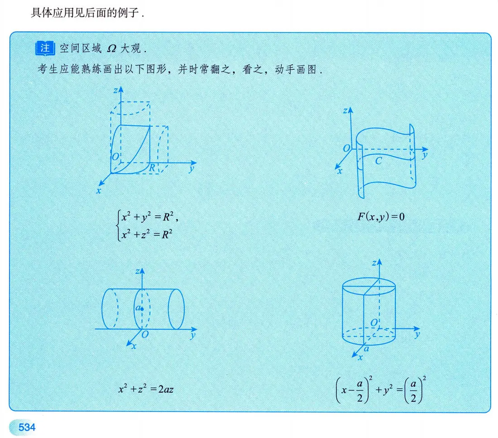
这段没有新定理，但它是本讲所有"定限"的地面：先一后二的穿线、先二后一的截面、球坐标的"转开穿"，全靠先在心里画出这张图。建议按原书要求"时常翻之，看之，动手画图"。
五、三重积分的直角坐标计算：先一后二法
先一后二法（先 \(z\) 后 \(xy\)，投影穿线法）（印 P539）。适用场合：\(\Omega\) 有下曲面 \(z=z_1(x,y)\)、上曲面 \(z=z_2(x,y)\)，无侧面或侧面为柱面。此时
\[ \iiint_{\Omega}f(x,y,z)\,\mathrm{d}v=\iint_{D_{xy}}\mathrm{d}\sigma\int_{z_1(x,y)}^{z_2(x,y)}f(x,y,z)\,\mathrm{d}z . \]
操作顺序：先把 \(\Omega\) 投影到 \(xOy\) 面得 \(D_{xy}\)，过 \(D_{xy}\) 内一点画铅直线，先穿过的曲面写下限、后穿过的写上限。
六、先二后一法与定限口诀
先二后一法（先 \(xy\) 后 \(z\)，定限截面法）（印 P540）。适用场合：\(\Omega\) 是旋转体（旋转曲面 \(z=z(x,y)\) 绕 \(z\) 轴），截面 \(D_z\) 好写。
\[ \iiint_{\Omega}f(x,y,z)\,\mathrm{d}v=\int_a^b\mathrm{d}z\iint_{D_z}f(x,y,z)\,\mathrm{d}\sigma , \]
"后积先定限，限内截个面，一刀切入"。原书给的定限总口诀（印 P540）：
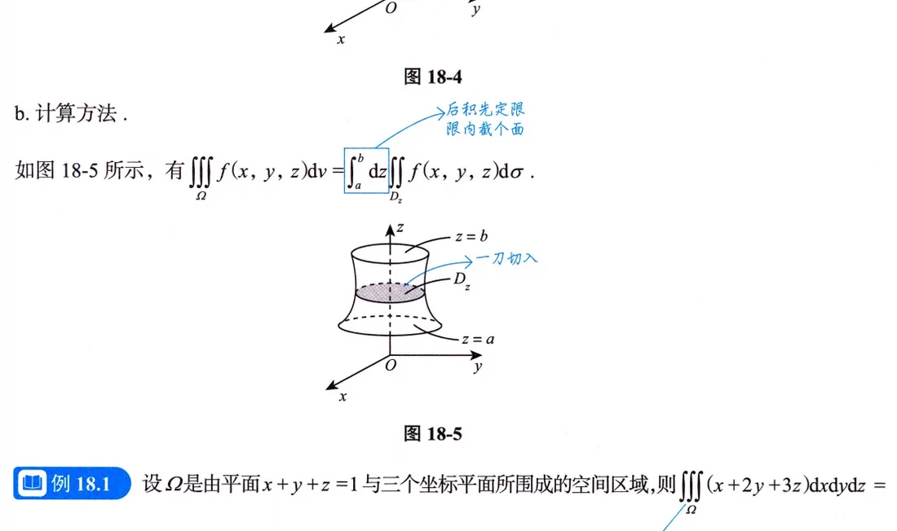
后积先定限，限内画条线，先交写下限，后交写上限。（先一后二画的是铅直线，先二后一截的是平面。）被积函数只含 \(z\)（或 \(f(z)\) 型）+ 旋转体，是先二后一的黄金组合：\(\iint_{D_z}\mathrm{d}\sigma\) 直接就是截面面积。
七、柱面坐标
柱面坐标系 = 极坐标系下的二重积分 + 定积分（印 P542）。在直角坐标计算中，若 \(\iint_{D_{xy}}\mathrm{d}\sigma\) 适合极坐标，令 \(x=r\cos\theta,\ y=r\sin\theta\)，则
\[ \iiint_{\Omega}f(x,y,z)\,\mathrm{d}x\mathrm{d}y\mathrm{d}z=\iiint_{\Omega}f(r\cos\theta,\,r\sin\theta,\,z)\,r\,\mathrm{d}r\,\mathrm{d}\theta\,\mathrm{d}z . \]
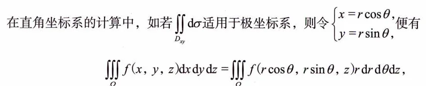
适用场合：投影域是圆、圆环、扇形，或被积函数含 \(f(x^2+y^2)\)（例 18.2、习题 18.8）。
八、球面坐标
令（印 P543）
\[ \begin{cases} x=r\sin\varphi\cos\theta,\\ y=r\sin\varphi\sin\theta,\\ z=r\cos\varphi, \end{cases} \qquad \mathrm{d}v=r^2\sin\varphi\,\mathrm{d}r\,\mathrm{d}\varphi\,\mathrm{d}\theta . \]
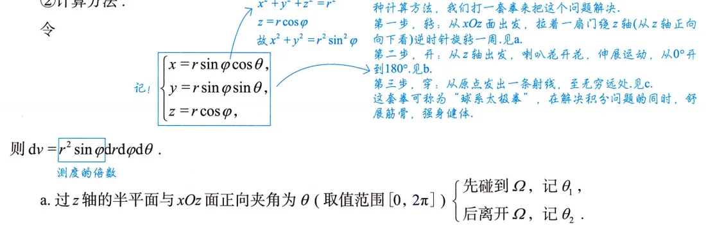
原书把定限编成一套"球系太极拳"（印 P543）：第一步"转"——过 \(z\) 轴的半平面与 \(xOz\) 面的夹角 \(\theta\in[0,2\pi]\)，"拉着一扇门绕 \(z\) 轴（从 \(z\) 轴正向往下看）逆时针旋转"，先碰到 \(\Omega\) 记 \(\theta_1\)、后离开记 \(\theta_2\)；第二步"开"——顶点在原点、以 \(z\) 轴为中心轴的圆锥面半顶角 \(\varphi\in[0,\pi]\)，"喇叭花开花，伸展运动，从 \(0^\circ\) 开到 \(180^\circ\)"；第三步"穿"——从原点发出射线到无穷远，先碰到 \(\Omega\) 记 \(r_1(\varphi,\theta)\)、后离开记 \(r_2(\varphi,\theta)\)。合起来：
\[ \iiint_{\Omega}f\,\mathrm{d}v=\int_{\theta_1}^{\theta_2}\mathrm{d}\theta\int_{\varphi_1(\theta)}^{\varphi_2(\theta)}\mathrm{d}\varphi\int_{r_1(\varphi,\theta)}^{r_2(\varphi,\theta)}f(r\sin\varphi\cos\theta,\,r\sin\varphi\sin\theta,\,r\cos\varphi)\,r^2\sin\varphi\,\mathrm{d}r . \]
适用场合（印 P542）：①被积函数含 \(f(x^2+y^2+z^2)\)（或 \(f(x^2+y^2)\)）；②积分区域为球或球的部分、锥或锥的部分。原书坦言球面坐标"应该是整个高等数学或者说微积分里最复杂的一种计算方法"，所以要打一套拳来解决，"在解决积分问题的同时，舒展筋骨，强身健体"。
九、三重积分的换元法
设 \(x=x(u,v,w),\ y=y(u,v,w),\ z=z(u,v,w)\) 是空间 \((x,y,z)\) 到 \((u,v,w)\) 的一一映射，有一阶连续偏导数且雅可比行列式不为零（印 P544–546），则
\[ \iiint_{\Omega_{xyz}}f(x,y,z)\,\mathrm{d}x\mathrm{d}y\mathrm{d}z=\iiint_{\Omega_{uvw}}f\big[x(u,v,w),\,y(u,v,w),\,z(u,v,w)\big]\left|\frac{\partial(x,y,z)}{\partial(u,v,w)}\right|\mathrm{d}u\mathrm{d}v\mathrm{d}w . \]
记忆锚点（原书旁批）："\(\mathrm{d}u\mathrm{d}v\mathrm{d}w\) 前乘雅可比行列式的绝对值"；"重积分盯着区域来换元：古怪的 \(\Omega_{xyz}\to\) 常规的 \(\Omega_{uvw}\)"。柱面坐标（雅可比 \(=r\)）、球面坐标（雅可比 \(=r^2\sin\varphi\)）都是它的特例（印 P545–546 各自完整推了一遍行列式）。椭球体用"伸缩换元"拍成单位球：如 \(x=u,\ 2y=v,\ z=w\) 处理 \(x^2+4y^2+z^2\le 1\)，见例 18.5。
十、三重积分的应用（几何量与物理量）
（印 P547–548）
- 体积：\(V=\iiint_{\Omega}\mathrm{d}v\)。
- 重心：体密度 \(\rho(x,y,z)\) 时
\[ \bar{x}=\frac{\iiint_{\Omega}x\rho\,\mathrm{d}v}{\iiint_{\Omega}\rho\,\mathrm{d}v},\quad \bar{y}=\frac{\iiint_{\Omega}y\rho\,\mathrm{d}v}{\iiint_{\Omega}\rho\,\mathrm{d}v},\quad \bar{z}=\frac{\iiint_{\Omega}z\rho\,\mathrm{d}v}{\iiint_{\Omega}\rho\,\mathrm{d}v} \]
（"因分子分母都有这个常数，故可约掉——背一个即可"）。考研范畴内重心就是质心；\(\rho\) 为常数时重心就成了形心。形心公式逆用是本讲最快的秒题技：\(\iiint_{\Omega}x\,\mathrm{d}v=\bar{x}\cdot V\)，若形心与体积都显然（球、椭球、正八面体），积分直接读出来（例 18.6、习题 18.2）。
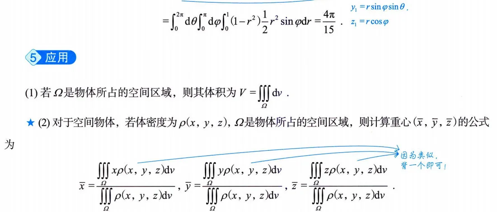
- 转动惯量：\(I_x=\iiint_{\Omega}(y^2+z^2)\rho\,\mathrm{d}v\)，\(I_y=\iiint_{\Omega}(z^2+x^2)\rho\,\mathrm{d}v\)，\(I_z=\iiint_{\Omega}(x^2+y^2)\rho\,\mathrm{d}v\)，\(I_O=\iiint_{\Omega}(x^2+y^2+z^2)\rho\,\mathrm{d}v\)（对轴只留"到该轴距离平方"）。微元观点：\(\mathrm{d}I_z=r^2\,\mathrm{d}m\)，\(r\) 为微元到 \(z\) 轴的距离（印 P548 图注）。
- 引力：物体对体外 \(M_0(x_0,y_0,z_0)\) 处质量 \(m\) 的质点的引力分量
\[ F_x=Gm\iiint_{\Omega}\dfrac{\rho(x,y,z)(x-x_0)}{\left[(x-x_0)^2+(y-y_0)^2+(z-z_0)^2\right]^{3/2}}\mathrm{d}v,\qquad F_y,\,F_z\ \text{轮换写出（印 P548）}. \]
十一、第一型曲线积分：概念、性质
概念（印 P549）：设 \(L\) 为 \(xOy\) 面内光滑曲线弧，\(f(x,y)\) 在 \(L\) 上有界，分割、近似、求和、取极限：
\[ \int_{L}f(x,y)\,\mathrm{d}s=\lim_{\lambda\to0}\sum_{i=1}^{n}f(\xi_i,\eta_i)\,\Delta s_i , \]
空间曲线 \(\Gamma\) 上同理 \(\int_{\Gamma}f(x,y,z)\,\mathrm{d}s\)。与定积分的对比（印 P549 注）：定积分定义在"直线段"上、第一型曲线积分定义在"曲线段"上——"底部直线变曲线"；且 \(f(x,y)\) 定义在 \(L:y=y(x)\) 上，故曲线方程可代入被积函数化简（这是曲线/曲面积分独有的权利）。弧微分 \(\mathrm{d}s=\sqrt{(\mathrm{d}x)^2+(\mathrm{d}y)^2}\)（空间再加 \((\mathrm{d}z)^2\)）。
性质（印 P550，总设 \(\Gamma\) 为空间有限长分段光滑曲线）：\(\int_{\Gamma}1\,\mathrm{d}s=l_{\Gamma}\)（弧长）；可积必有界；线性；可加性；保号性与绝对值不等式；估值定理 \(ml\le\int_{\Gamma}f\,\mathrm{d}s\le Ml\)；中值定理。原书旁批特别提醒四个微元的正负：\(\mathrm{d}x\) 在 \(a<b\) 时为正、\(a>b\) 时为负，而 \(\mathrm{d}s>0,\ \mathrm{d}\sigma>0,\ \mathrm{d}v>0\) 恒成立——这正是第一型曲线积分"化定积分必须下限小上限大"的根源。
十二、第一型曲线积分的对称性
普通对称性照搬三重积分：\(\Gamma\) 关于 \(xOz\) 面对称（左右对称，变的是 \(y\)；上下对称变 \(z\)，前后对称变 \(x\)）时，被积函数关于相应变量为偶取 2 倍、为奇取 0（印 P550）。轮换对称性：把 \(x\) 与 \(y\) 对调后 \(\Gamma\) 不变，则 \(\int_{\Gamma}f(x,y,z)\,\mathrm{d}s=\int_{\Gamma}f(y,x,z)\,\mathrm{d}s\)——原因是 \(\mathrm{d}s=\sqrt{(\mathrm{d}x)^2+(\mathrm{d}y)^2+(\mathrm{d}z)^2}\) 在加法交换下不变（印 P551）。
十三、第一型曲线积分的计算
"从定积分来，回到定积分去"（印 P551），口诀仍是"一投二代三计算"：一投——把 \(L\) 投到 \(x\) 轴（或参数区间）；二代——\(L\) 上的点受曲线方程约束，必须把 \(y=y(x)\) 等代入 \(f\)（"这里的 \(x,y\) 不是独立的"）；三计算——套弧微分公式。
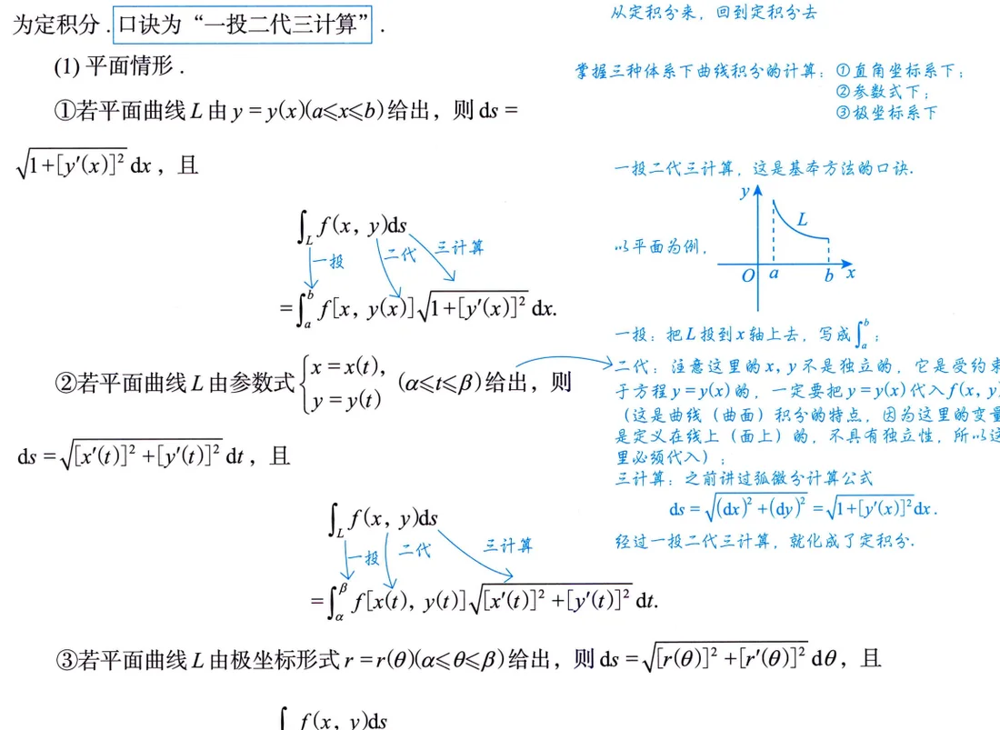
- 平面显式 \(y=y(x)\ (a\le x\le b)\)：\(\mathrm{d}s=\sqrt{1+[y'(x)]^2}\,\mathrm{d}x\)；
- 参数式 \(x=x(t),\,y=y(t)\ (\alpha\le t\le\beta)\)：\(\mathrm{d}s=\sqrt{[x'(t)]^2+[y'(t)]^2}\,\mathrm{d}t\)；
- 极坐标 \(r=r(\theta)\ (\alpha\le\theta\le\beta)\)：\(\mathrm{d}s=\sqrt{r^2(\theta)+[r'(\theta)]^2}\,\mathrm{d}\theta\)；
- 空间参数式：\(\mathrm{d}s=\sqrt{[x'(t)]^2+[y'(t)]^2+[z'(t)]^2}\,\mathrm{d}t\)。
最终化为"关于 \(t\) 的一元函数"的定积分，且下限必须小于上限（\(\mathrm{d}s>0\)）——与第二型曲线积分"谁大谁小无所谓、只认起点终点"形成鲜明对照。
十四、第一型曲线积分的应用
（印 P553）①弧长：\(l=\int_a^b\sqrt{[x'(t)]^2+[y'(t)]^2+[z'(t)]^2}\,\mathrm{d}t\)；②重心：\(\bar{x}=\dfrac{\int_{\Gamma}x\rho\,\mathrm{d}s}{\int_{\Gamma}\rho\,\mathrm{d}s}\) 等（考研内重心即质心，\(\rho\) 常数时为形心）；③形心逆用：\(\int_{\Gamma}x\,\mathrm{d}s=\bar{x}\cdot l\)；④转动惯量：\(I_x=\int_{\Gamma}(y^2+z^2)\rho\,\mathrm{d}s\)，\(I_z=\int_{\Gamma}(x^2+y^2)\rho\,\mathrm{d}s\)，\(I_O=\int_{\Gamma}(x^2+y^2+z^2)\rho\,\mathrm{d}s\)。
十五、第一型曲面积分：概念、性质与对称性
概念（印 P554）：设曲面 \(\Sigma\) 光滑，\(f(x,y,z)\) 在 \(\Sigma\) 上有界，把 \(\Sigma\) 任意分成 \(n\) 小块 \(\Delta S_i\)（同时代表面积），取点作和取极限：
\[ \iint_{\Sigma}f(x,y,z)\,\mathrm{d}S=\lim_{\lambda\to0}\sum_{i=1}^{n}f(\xi_i,\eta_i,\zeta_i)\,\Delta S_i . \]
物理背景：以 \(f(x,y,z)\) 为面密度的空间物质曲面的质量。与二重积分对比："由平面变曲面"（\(\mathrm{d}\sigma\to\mathrm{d}S\)，印 P555 图 18-11）；注意 \(\mathrm{d}s\)（弧微分，曲线积分用）与 \(\mathrm{d}S\)（面微分，曲面积分用）写法区分。
性质（印 P555）：\(\iint_{\Sigma}1\,\mathrm{d}S=S\)（曲面面积）；线性；可加；保号与绝对值不等式；估值 \(mS\le\iint_{\Sigma}f\,\mathrm{d}S\le MS\)；中值定理——全套与二重、三重平行。
对称性（印 P556）：普通对称性照搬（\(\Sigma\) 关于坐标面对称 + 奇偶 \(\Rightarrow\) 2 倍或 0）；轮换对称性——当 \(\Sigma:z=z(x,y)\) 为单值函数且 \(x,y\) 对调后 \(\Sigma\) 不变时，\(\iint_{\Sigma}f(x,y,z)\,\mathrm{d}S=\iint_{\Sigma}f(y,x,z)\,\mathrm{d}S\)（此时 \(\mathrm{d}S\) 表达式也不变）。
十六、第一型曲面积分的计算
化为二重积分，口诀"一投二代三计算"（印 P556）：①一投——把 \(\Sigma\) 投到某坐标面（如 \(xOy\) 面）得 \(D_{xy}\)；②二代——把 \(z=z(x,y)\) 或 \(F(x,y,z)=0\) 代入被积函数；③三计算——算 \(z_x',z_y'\)，\(\mathrm{d}S=\sqrt{1+(z_x')^2+(z_y')^2}\,\mathrm{d}x\mathrm{d}y\)：
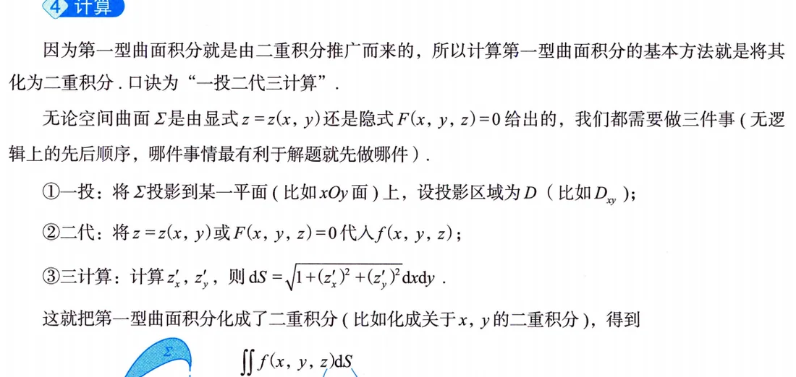
\[ \iint_{\Sigma}f(x,y,z)\,\mathrm{d}S=\iint_{D_{xy}}f\big[x,y,z(x,y)\big]\sqrt{1+(z_x')^2+(z_y')^2}\,\mathrm{d}x\mathrm{d}y . \]
三件事"无逻辑上的先后顺序，哪件最有利于解题就先做哪件"。红线：投影点不能重合（印 P557）——投影到哪个面由你自己决定，但 \(\Sigma\) 上任何两点的投影点不能重合，即 \(z=z(x,y)\) 必须单值；若投影有重合点且对称性用不上，则要么换一个坐标面投，要么把 \(\Sigma\) 拆成若干块（拆分曲线的求法：切平面法向量与 \(z\) 轴垂直的点集，印 P557）。
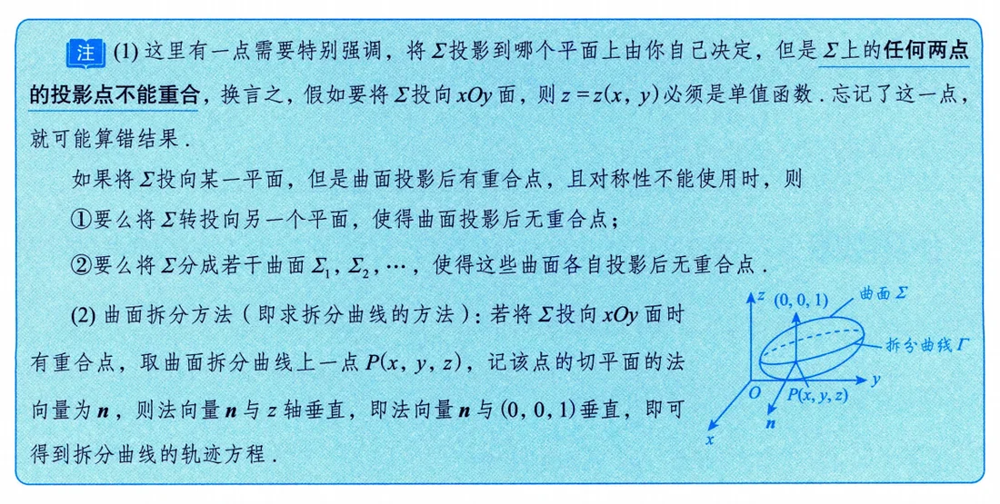
三个常用 \(\mathrm{d}S\)，直接背（印 P557–558，"以下常考，可以背一下"）：
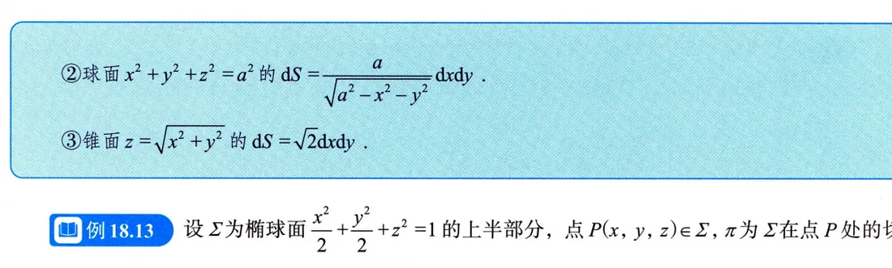
- 柱面 \(x^2+y^2=a^2\)：\(\mathrm{d}S=\dfrac{a}{\sqrt{a^2-x^2}}\,\mathrm{d}x\mathrm{d}z\)；
- 球面 \(x^2+y^2+z^2=a^2\)：\(\mathrm{d}S=\dfrac{a}{\sqrt{a^2-x^2-y^2}}\,\mathrm{d}x\mathrm{d}y\)；
- 锥面 \(z=\sqrt{x^2+y^2}\)：\(\mathrm{d}S=\sqrt{2}\,\mathrm{d}x\mathrm{d}y\)。
十七、第一型曲面积分的应用
（印 P559–560）原书按重要性排序："三重积分：形心最重要；第一型曲面积分：曲面面积最重要。"①曲面面积：\(A=\iint_{D_{xy}}\sqrt{1+(z_x')^2+(z_y')^2}\,\mathrm{d}x\mathrm{d}y\)（保证单值时可类似向另两个坐标面投），"曲面面积就是被积函数为 1 的第一型曲面积分用投影法所得"；②重心公式（分母 \(\iint_{\Sigma}\rho\,\mathrm{d}S\) 即质量）；③形心逆用：\(\iint_{\Sigma}x\,\mathrm{d}S=\bar{x}\cdot A\)；④转动惯量：把三重积分公式中的 \(\mathrm{d}v\) 换成 \(\mathrm{d}S\)。
十八、平面第二型曲线积分：背景、概念与性质
变力沿曲线做功（印 P561）：向量场（变力场）\(\boldsymbol{F}(x,y)=P(x,y)\boldsymbol{i}+Q(x,y)\boldsymbol{j}\) 作用下的质点沿有向曲线 \(L\) 从 \(A\) 到 \(B\)，微位移 \(\mathrm{d}\boldsymbol{s}=\mathrm{d}x\boldsymbol{i}+\mathrm{d}y\boldsymbol{j}\)（弧微分向量），微功 \(\mathrm{d}W=\boldsymbol{F}\cdot\mathrm{d}\boldsymbol{s}\)（水平方向做功微元 \(P\,\mathrm{d}x\) + 铅直方向做功微元 \(Q\,\mathrm{d}y\)），总功
\[ W=\int_L\boldsymbol{F}\cdot\mathrm{d}\boldsymbol{s}=\int_LP(x,y)\,\mathrm{d}x+Q(x,y)\,\mathrm{d}y . \]
于是引出第二型曲线积分的概念。它是向量函数沿有向曲线的积分，无几何量可言——与定积分、二重、三重、第一型曲线、第一型曲面（数量函数算几何量）划清界限（印 P561，考研中出过基于此背景的考题）。
性质（印 P561–562）：①线性；②有向性 \(\int_{\widehat{AB}}\boldsymbol{F}\cdot\mathrm{d}\boldsymbol{s}=-\int_{\widehat{BA}}\boldsymbol{F}\cdot\mathrm{d}\boldsymbol{s}\)；③弧段可加性。
关于"对称性"的重要注记（印 P562）：第二型曲线积分没有几何上的对称性。以 \(L\) 关于 \(y\) 轴对称为例：有向曲线本身不关于 \(y\) 轴对称——点 \((x,y)\) 与 \((-x,y)\) 处的 \(\mathrm{d}\boldsymbol{s}\) 并不对称，分解后发现两处 \(\mathrm{d}x\) 同向、\(\mathrm{d}y\) 反向。故若 \(\boldsymbol{F}=xy\boldsymbol{j}\) 沿这样的 \(L\) 做功，两处微功 \(xy\,\mathrm{d}y\) 与 \(-xy\,\mathrm{d}y\) 相加为零，\(\int_Lxy\,\mathrm{d}y=0\)；而同样的曲线与函数，第一型 \(\int_Lxy\,\mathrm{d}s=2\int_{L_1}xy\,\mathrm{d}s\)。原因：数量积分的对称性基于几何背景，向量积分多了"方向"因素——"在物理概念的基础上，得出数学表达式并确定好方向后，在数量大小上看是否相等"，必须逐题这样推，不能套第一型的模板。
十九、第二型曲线积分化为定积分
（印 P562–563）设 \(L:x=x(t),\,y=y(t)\)，\(t:\alpha\to\beta\)，\(t=\alpha\) 对应起点 \(A\)、\(t=\beta\) 对应终点 \(B\)，\(\alpha,\beta\) 谁大谁小无关紧要，关键是与起点、终点对应（与第一型曲线积分"要求 \(\alpha\le\beta\)"不同）：
\[ \int_LP\,\mathrm{d}x+Q\,\mathrm{d}y=\int_{\alpha}^{\beta}\bigl\{P[x(t),y(t)]\,x'(t)+Q[x(t),y(t)]\,y'(t)\bigr\}\,\mathrm{d}t . \]
若 \(L:y=y(x),\ x:a\to b\)：\(\int_LP\,\mathrm{d}x+Q\,\mathrm{d}y=\int_a^b\bigl\{P[x,y(x)]+Q[x,y(x)]\,y'(x)\bigr\}\mathrm{d}x\)。原书还给出等价写法：\(x\) 从 \(a\to b\) 时统一写成 \(\int_{\min(a,b)}^{\max(a,b)}\bigl\{P+Qy'\bigr\}(\pm\mathrm{d}x)\)，\(a<b\) 取 \(+\mathrm{d}x\)、\(a>b\) 取 \(-\mathrm{d}x\)（类比第二型曲面积分的 ±号规则）。
公式18.1 格林公式
（印 P564–565）理论意义："类似 \(f(x)\,\mathrm{d}x=\mathrm{d}F(x)\)，把一个区间内部要解决的问题转换到端点上去"——格林公式把"环路积分"与"重积分"连接起来，实现边界与内部的转换。原书配了个励志故事：格林闭关七天七夜创立格林公式，出关被朋友挖苦"你怎么耐得住寂寞"，格林答"我根本没有寂寞，何来寂寞可耐"——"考研需要闭关修炼，以伟大的数学家格林为榜样"。
定理：设平面有界闭区域 \(D\) 由分段光滑曲线 \(L\) 围成，\(P(x,y),Q(x,y)\) 在 \(D\) 上具有一阶连续偏导数，\(L\) 取正向（沿 \(L\) 前进时左手始终在 \(D\) 内；想象在环形操场跑步左手始终在草坪中），则
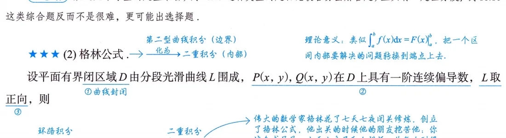
\[ \oint_LP\,\mathrm{d}x+Q\,\mathrm{d}y=\iint_D\left(\frac{\partial Q}{\partial x}-\frac{\partial P}{\partial y}\right)\mathrm{d}\sigma . \]
使用三分支（印 P565–567，动笔前先过三关：闭不闭？内部有没有奇点？方向是不是正向？）：
- 曲线封闭且内部无奇点（没有破坏一阶偏导连续条件的点）：直接用。方向是顺时针（负向）就先添负号。
- 非封闭曲线且 \(\dfrac{\partial Q}{\partial x}-\dfrac{\partial P}{\partial y}\ne 0\)：补线使其封闭（加线减线）。补一条规则曲线 \(C_{AB}\)（一般为平行坐标轴的直线段）使 \(L_{AB}+C_{BA}\)（记为 \(L\)）围成单连通区域，则 \[ \int_{L_{AB}}P\,\mathrm{d}x+Q\,\mathrm{d}y=\oint_{L}P\,\mathrm{d}x+Q\,\mathrm{d}y-\int_{C_{AB}}P\,\mathrm{d}x+Q\,\mathrm{d}y=\pm\iint_D\Bigl(\frac{\partial Q}{\partial x}-\frac{\partial P}{\partial y}\Bigr)\mathrm{d}\sigma+\int_{C_{AB}}P\,\mathrm{d}x+Q\,\mathrm{d}y, \] "±"由 \(L\) 的方向定（正向取正、负向取负）；补线上"多做的功，减去即可"。
- 曲线封闭但有奇点在内部，且除奇点外 \(\dfrac{\partial Q}{\partial x}=\dfrac{\partial P}{\partial y}\)（无旋场）：换路径（挖洞）。作一条全部在 \(D\) 内、能把奇点包在内部的封闭曲线 \(L_1\)（一般令分母等于常数），与 \(L\) 同方向，则 \[ \oint_LP\,\mathrm{d}x+Q\,\mathrm{d}y=\oint_{L_1}P\,\mathrm{d}x+Q\,\mathrm{d}y . \] 原理（印 P567 图 18-18）：挖去奇点后的复连通区域上用格林公式，内外两条边界线"原路返回、负负得正"，外边界的功换到里边界的线上做；"其实这两条线应重合"——路径的起点终点无须与原路径重合。
公式18.2 平面曲线积分与路径无关
（印 P567–569）设 \(G\) 为单连通区域（不含"洞"，包括点洞；圆环、去心圆都是复连通区域——"挖洞后会出现点洞"），\(P,Q\) 在 \(G\) 内有一阶连续偏导数，则曲线积分 \(\int_LP\,\mathrm{d}x+Q\,\mathrm{d}y\) 在 \(G\) 内与路径无关 \(\iff\) 沿 \(G\) 内任意闭曲线积分为零（证明核心：两条路径拼成闭曲线，"负负得正"）。
六个等价命题（印 P569，\(D\) 单连通 + 偏导连续的前提下）：
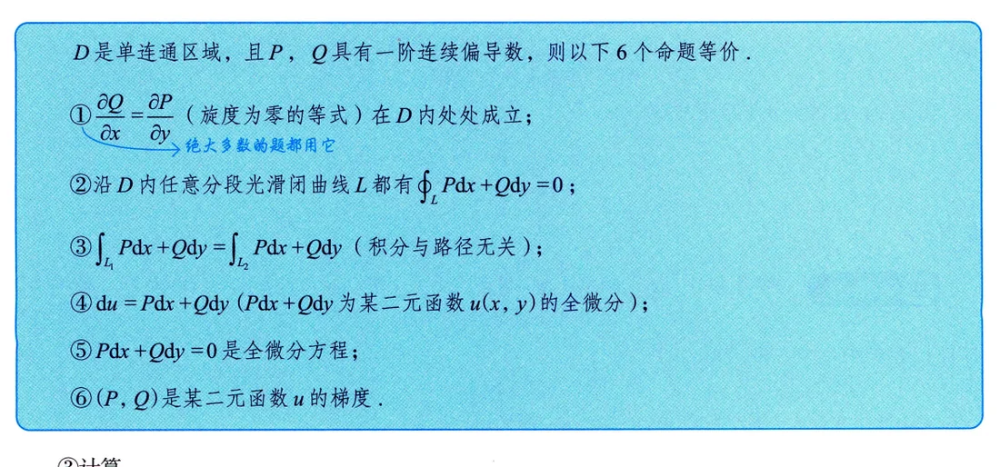
① \(\dfrac{\partial P}{\partial y}=\dfrac{\partial Q}{\partial x}\)（旋度为零）在 \(D\) 内处处成立（"绝大多数的题都用它"）；② 沿 \(D\) 内任意分段光滑闭曲线积分恒为零；③ 积分与路径无关；④ 存在 \(u(x,y)\) 使 \(\mathrm{d}u=P\,\mathrm{d}x+Q\,\mathrm{d}y\)（\(P\,\mathrm{d}x+Q\,\mathrm{d}y\) 为某二元函数的全微分）；⑤ \(P\,\mathrm{d}x+Q\,\mathrm{d}y=0\) 是全微分方程；⑥ \((P,Q)\) 是某二元函数 \(u\) 的梯度。
求原函数与算积分（印 P569）：沿折线（折线必须在 \(D\) 内）计算——
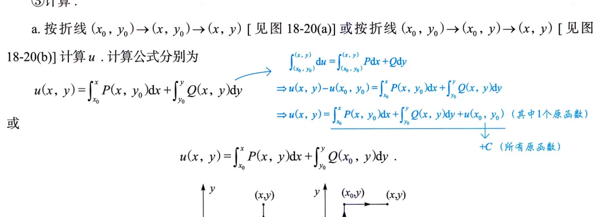
\[ u(x,y)=\int_{x_0}^{x}P(x,y_0)\,\mathrm{d}x+\int_{y_0}^{y}Q(x,y)\,\mathrm{d}y \]
（先横后竖；或先竖后横 \(u(x,y)=\int_{y_0}^{y}Q(x_0,y)\,\mathrm{d}y+\int_{x_0}^{x}P(x,y)\,\mathrm{d}x\)），再加任意常数 \(C\) 得所有原函数；积分值用 \(u(\text{终点})-u(\text{起点})\)。也可以凑微分直接看出结构（如 \(u\,\mathrm{d}v+v\,\mathrm{d}u=\mathrm{d}(uv)\)，印 P570 例 18.21 方法三）。
二十、第二型曲面积分：通量、概念与性质
向量场的通量（印 P571）：曲面上每点对应一个向量 \(\boldsymbol{F}(x,y,z)=P\boldsymbol{i}+Q\boldsymbol{j}+R\boldsymbol{k}\) 就确定一个向量场。设 \(\Sigma\) 为场中有向分片光滑曲面并指定了侧，则 \(\boldsymbol{F}\) 通过 \(\Sigma\) 的通量（电通量、磁通量、流量）为
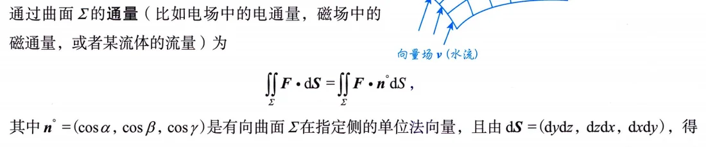
\[ \iint_{\Sigma}\boldsymbol{F}\cdot\mathrm{d}\boldsymbol{S}=\iint_{\Sigma}\boldsymbol{F}\cdot\boldsymbol{n}^{\circ}\,\mathrm{d}S =\iint_{\Sigma}P\,\mathrm{d}y\mathrm{d}z+Q\,\mathrm{d}z\mathrm{d}x+R\,\mathrm{d}x\mathrm{d}y , \]
其中 \(\boldsymbol{n}^{\circ}=(\cos\alpha,\cos\beta,\cos\gamma)\) 为指定侧的单位法向量，\(\mathrm{d}\boldsymbol{S}=(\mathrm{d}y\mathrm{d}z,\mathrm{d}z\mathrm{d}x,\mathrm{d}x\mathrm{d}y)\) 是面微分向量（大小与第一型曲面积分的 \(\mathrm{d}S\) 同一概念）。与第二型曲线积分"一脉相承"：\(\int_L\boldsymbol{F}\cdot\mathrm{d}\boldsymbol{s}\) 是总功，\(\iint_{\Sigma}\boldsymbol{F}\cdot\mathrm{d}\boldsymbol{S}\) 是总流量。
性质（印 P571–572）：线性；方向性 \(\iint_{\Sigma^-}\boldsymbol{F}\cdot\mathrm{d}\boldsymbol{S}=-\iint_{\Sigma^+}\boldsymbol{F}\cdot\mathrm{d}\boldsymbol{S}\)；可加性。通量记号约定：流出的记正（流出去 \(5\,\mathrm{m}^3\) 水记 \(+5\)），流入的记负。"对称性"注记与第二型曲线积分同理（印 P572）：没有几何对称性，只有"形式上的抵消或两倍"——如 \(\Sigma\) 关于 \(xOz\) 面对称、\(Q=xyz\)（关于 \(y\) 偶）时 \(\iint_{\Sigma}xyz\,\mathrm{d}z\mathrm{d}x=0\)：对称两处法向量在 \(\boldsymbol{j}\) 方向的投影反号，两个微元 \(xyz\,\mathrm{d}z\mathrm{d}x\) 与 \(xyz\,(-\mathrm{d}z\mathrm{d}x)\) 相抵；从通量理解就是"从 \(A\) 流入、从 \(B\) 流出，通量为 0"。
二十一、第二型曲面积分的直接投影法
（印 P573–574）化为二重积分：①拆成三个积分（如果有的话）一个一个做；②分别投影到相应坐标面。对 \(\iint_{\Sigma}R(x,y,z)\,\mathrm{d}x\mathrm{d}y\)：
- 若 \(\Sigma\) 垂直于 \(xOy\) 面（投影为一条线），此积分为零——例如圆柱侧面上 \(\iint R\,\mathrm{d}x\mathrm{d}y=0\)（"线上无面积"）。注意与第一型相反：第一型不允许乱选投影方向（必须 \(z=z(x,y)\) 写得出来），第二型的 \(\mathrm{d}y\mathrm{d}z,\mathrm{d}z\mathrm{d}x,\mathrm{d}x\mathrm{d}y\) 三个微元"不能想换什么换什么"，要转换须先经计算。
- 若投影点重合，先把 \(\Sigma\) 剖分成若干曲面片，再写 \(z=z(x,y)\)（只有投影点不重合时才写得出单值函数）。
- ③一投二代三计算：\(\mathrm{d}x\mathrm{d}y=\pm\mathrm{d}x\mathrm{d}y\)，"\(\pm\)"按法向量方向取（印 P573）：
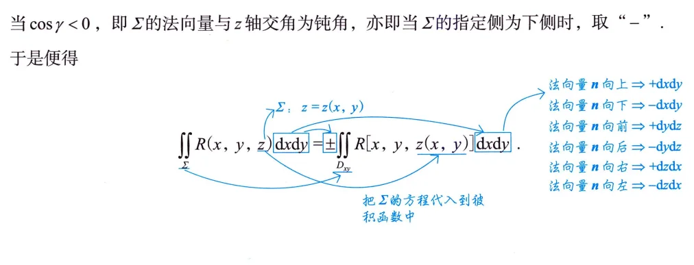
\[ \iint_{\Sigma}R(x,y,z)\,\mathrm{d}x\mathrm{d}y=\pm\iint_{D_{xy}}R\bigl[x,y,z(x,y)\bigr]\,\mathrm{d}x\mathrm{d}y , \]
法向量向上（\(\cos\gamma>0\)，上侧）取 \(+\)，向下（下侧）取 \(-\)；同理向前 \(\to+\mathrm{d}y\mathrm{d}z\)、向后 \(\to-\mathrm{d}y\mathrm{d}z\)；向右 \(\to+\mathrm{d}z\mathrm{d}x\)、向左 \(\to-\mathrm{d}z\mathrm{d}x\)。口诀：上正下负、前正后负、右正左负。（类比第二型曲线积分 \(a<b\to+\mathrm{d}x,\ a>b\to-\mathrm{d}x\)。）
两个 \(\mathrm{d}x\mathrm{d}y\) 的区别（印 P574 注）：等号左边是第二型曲面积分，\(\mathrm{d}x\mathrm{d}y\) 为有向面微元在 \(xOy\) 面上的投影分量（带符号）；右边是二重积分，\(\mathrm{d}x\mathrm{d}y\) 为面积微元（恒正）——写法一样、意义不同，\(R\) 中的 \(z\) 已用 \(\Sigma\) 的方程代入。
二十二、转换投影法
（印 P575）①有向曲面正向单位法向量的求法。设 \(\Sigma:z=z(x,y)\)（\(z\) 有一阶连续偏导），则
\[ \boldsymbol{n}^{\circ}=\pm\frac{1}{\sqrt{1+(z_x')^2+(z_y')^2}}\left(-z_x',\,-z_y',\,1\right), \]
上侧为正取 "\(+\)"、下侧取 "\(-\)"（上正下负）；同理 \(\Sigma:y=y(x,z)\) 时 \(\boldsymbol{n}^{\circ}=\pm\dfrac{(1,-y_x',-y_z')}{\sqrt{1+(y_x')^2+(y_z')^2}}\)（右正左负），\(\Sigma:x=x(y,z)\) 时 \(\boldsymbol{n}^{\circ}=\pm\dfrac{(-x_y',1,-x_z')}{\sqrt{1+(x_y')^2+(x_z')^2}}\)（前正后负）。
②转换投影定理：设 \(\Sigma:z=z(x,y)\)，\(P,Q,R\) 在 \(\Sigma\) 上连续，则
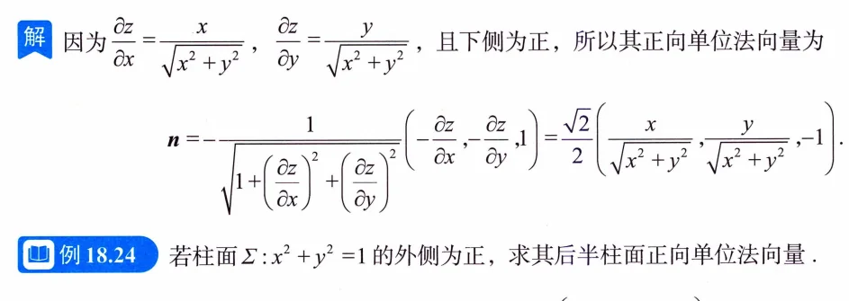
\[ \iint_{\Sigma}P\,\mathrm{d}y\mathrm{d}z+Q\,\mathrm{d}z\mathrm{d}x+R\,\mathrm{d}x\mathrm{d}y =\pm\iint_{D_{xy}}\left(-Pz_x'-Qz_y'+R\right)\mathrm{d}x\mathrm{d}y , \]
其中 \(p=P[x,y,z(x,y)],\ q=Q[x,y,z(x,y)],\ r=R[x,y,z(x,y)]\)（\(z\) 必须先代入），"±"同①的取法。证明（印 P576）就是 \(\iint\boldsymbol{F}\cdot\mathrm{d}\boldsymbol{S}=\iint\boldsymbol{F}\cdot\boldsymbol{n}^{\circ}\,\mathrm{d}S\) 一行展开。一次投影搞定三项，比分三项各投各的省事——这是数一卷面上非常受欢迎的方法。
公式18.3 高斯公式与散度
（印 P577）"联想到格林公式"——高斯公式把边界曲面上的第二型曲面积分化为内部立体的三重积分。定理：设空间有界闭区域 \(\Omega\) 由分片光滑的封闭有向曲面 \(\Sigma\) 围成，\(P,Q,R\) 在 \(\Omega\) 上具有一阶连续偏导数，\(\Sigma\) 取整个边界曲面的外侧，则
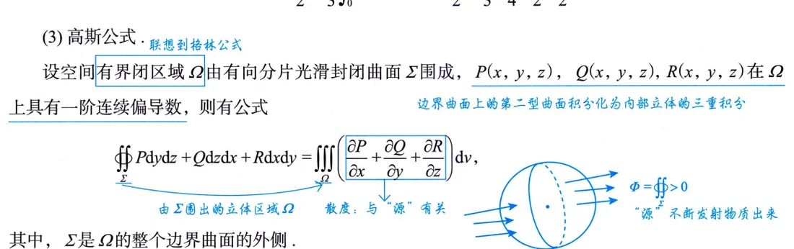
\[ \oiint_{\Sigma}P\,\mathrm{d}y\mathrm{d}z+Q\,\mathrm{d}z\mathrm{d}x+R\,\mathrm{d}x\mathrm{d}y =\iiint_{\Omega}\left(\frac{\partial P}{\partial x}+\frac{\partial Q}{\partial y}+\frac{\partial R}{\partial z}\right)\mathrm{d}v . \]
散度与无源场（印 P577）：记 \(\operatorname{div}\boldsymbol{F}=\dfrac{\partial P}{\partial x}+\dfrac{\partial Q}{\partial y}+\dfrac{\partial R}{\partial z}\)，它是该点"源"的散发强度（"源不断发射物质出来"）。若处处 \(\operatorname{div}\boldsymbol{F}=0\)——"每一点都没有发散，也没有吸收，是个安安静静的场"——称为无源场，此时任何内部无奇点的闭曲面上通量为零。
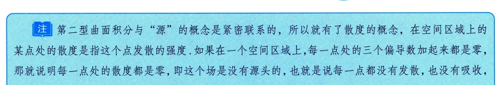
使用三分支（印 P577–579，与格林公式完全平行）：
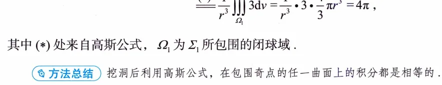
- 封闭曲面且内部无奇点：直接用（例 18.26）。
- 非封闭曲面且 \(\operatorname{div}\boldsymbol{F}\ne 0\)：补面使其封闭（加面减面）——一般补一块平行于坐标面的平面（圆盘、矩形），整体用高斯后再减补面上的积分（例 18.27、习题 18.10）。
- 封闭曲面，有奇点在内部，且除奇点外 \(\operatorname{div}\boldsymbol{F}=0\)：换个面积分（挖洞，边界无须与原曲面重合）。作封闭曲面 \(\Sigma_1\) 把奇点都包进内部（一般取分母 \(=\varepsilon^2\) 或 \(=\varepsilon^3\) 的小球面），法向量指向其所围区域外侧（与 \(\Sigma\) 同向），则 \(\oiint_{\Sigma}=\oiint_{\Sigma_1}\)。原理：无源场通过任何内部无奇点的闭曲面通量为零，两闭曲面之间"负负得正"（例 18.28）。
二十三、空间第二型曲线积分与斯托克斯公式
（印 P580–581）①基本方法——一投二代三计算：设 \(\Gamma:x=x(t),\,y=y(t),\,z=z(t),\ t:\alpha\to\beta\)，则
\[ \int_{\Gamma}P\,\mathrm{d}x+Q\,\mathrm{d}y+R\,\mathrm{d}z=\int_{\alpha}^{\beta}\bigl(Px'(t)+Qy'(t)+Rz'(t)\bigr)\,\mathrm{d}t \]
（\(P,Q,R\) 中代入参数式；\(t\) 的起止对应曲线起终，与大小无关）。
②斯托克斯公式——实现边界与内部的转换：设 \(\Omega\) 为某空间区域，\(\Sigma\) 为 \(\Omega\) 内的分片光滑有向曲面片，\(\Gamma\) 为 \(\Sigma\) 的逐段光滑边界，\(\Gamma\) 的方向与 \(\Sigma\) 的法向量成右手系，\(P,Q,R\) 在 \(\Omega\) 内具有连续的一阶偏导数，则
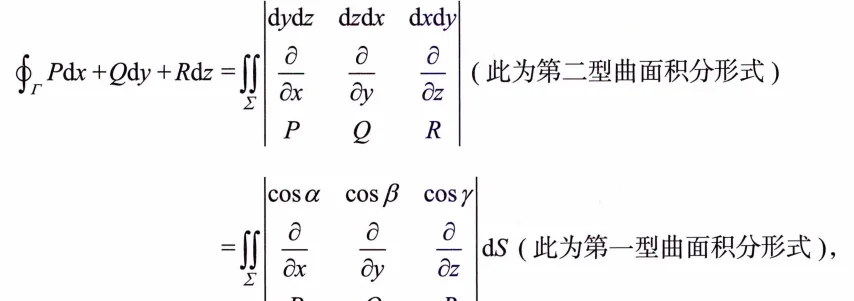
\[ \oint_{\Gamma}P\,\mathrm{d}x+Q\,\mathrm{d}y+R\,\mathrm{d}z =\iint_{\Sigma}\begin{vmatrix}\mathrm{d}y\mathrm{d}z & \mathrm{d}z\mathrm{d}x & \mathrm{d}x\mathrm{d}y\\[2pt] \dfrac{\partial}{\partial x} & \dfrac{\partial}{\partial y} & \dfrac{\partial}{\partial z}\\[6pt] P & Q & R\end{vmatrix} =\iint_{\Sigma}\begin{vmatrix}\cos\alpha & \cos\beta & \cos\gamma\\[2pt] \dfrac{\partial}{\partial x} & \dfrac{\partial}{\partial y} & \dfrac{\partial}{\partial z}\\[6pt] P & Q & R\end{vmatrix}\mathrm{d}S , \]
第一式是第二型曲面积分形式，第二式是第一型曲面积分形式（\(\boldsymbol{n}^{\circ}=(\cos\alpha,\cos\beta,\cos\gamma)\) 为 \(\Sigma\) 的单位法向量）。
注（印 P581，泡泡棒比喻）：公式的成立与绷在 \(\Gamma\) 上的曲面大小、形状无关——"小孩玩的泡泡棒，蘸了肥皂水吹一下泡泡就出来了，工就是绷肥皂水的塑料圈，上面绷着的就是泡泡，在这些泡泡中无论哪个、不管大小和形状都可以作为计算公式中的 \(\Sigma\)。再问大家，绷在 \(\Gamma\) 上的什么曲面最简单？答得好，平面！在泡泡还没有脱离圈圆之前可以有各种形状，但最简单的形状是平面，是吹之前的最原始的形状！"——所以用斯托克斯时优先在 \(\Gamma\) 上绷一张平面片。
典型例题精讲
本讲共 30 道 例题（印 P540–582），下面 17 道全格式精讲，其余 13 道速览收全；习题 18.1–18.11 的速览附在本节末尾。
例18.1 三重积分：轮换对称性 + 先二后一（印P540）
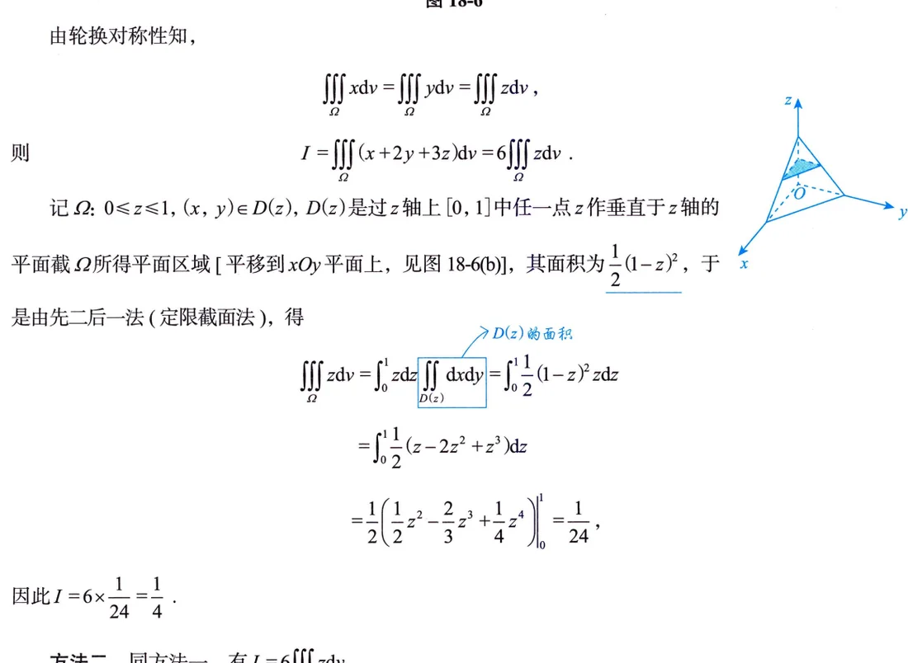
思路 设 \(\Omega\) 是由平面 \(x+y+z=1\) 与三个坐标面围成的四面体，求 \(\iiint_{\Omega}(x+2y+3z)\,\mathrm{d}x\mathrm{d}y\mathrm{d}z\)。被积函数各变量地位对称、区域也对称，先用轮换对称性把权数抹平，再用先二后一。原书旁批："此题投影穿线法更简单"——两种方法都该会。 要点 轮换对称性给出 \(\iiint_{\Omega}x\,\mathrm{d}v=\iiint_{\Omega}y\,\mathrm{d}v=\iiint_{\Omega}z\,\mathrm{d}v\)，故 \(I=6\iiint_{\Omega}z\,\mathrm{d}v\)。截面 \(D(z)\)（\(0\le z\le 1\)）是直角边 \(1-z\) 的等腰直角三角形，面积 \(\frac{1}{2}(1-z)^2\)，于是
\[ \iiint_{\Omega}z\,\mathrm{d}v=\int_0^1 z\cdot\tfrac12(1-z)^2\,\mathrm{d}z=\frac{1}{24},\qquad I=6\times\frac{1}{24}=\frac14 . \]
另解 先一后二：\(0\le z\le 1-x-y,\ (x,y)\in D_{xy}=\{0\le x\le 1,0\le y\le 1-x\}\)，算 \(\frac{1}{8}\iint(1-x-y)^3\mathrm{d}\sigma\) 同样得 \(\frac14\)（印 P541 方法二）。
例18.2 三重积分：柱面坐标 + 点火公式（印P542）
思路 设 \(\Omega\) 由圆柱面 \(x^2+(y-1)^2=1\)、旋转抛物面 \(8z=x^2+y^2\) 及平面 \(z=0\) 围成，求 \(I=\iiint_{\Omega}\sqrt{x^2+y^2}\,\mathrm{d}v\)。区域投影是圆 \(x^2+(y-1)^2\le 1\)（即 \(x^2+y^2\le 2y\)），被积函数含 \(x^2+y^2\)——标准柱面坐标信号。原书旁批提醒"投影法更方便"：先一后二，\(z\) 从 \(0\) 到 \(\frac{x^2+y^2}{8}\)。 要点
\[ I=\iint_{D_{xy}}\sqrt{x^2+y^2}\cdot\frac{x^2+y^2}{8}\,\mathrm{d}\sigma =\int_0^{\pi}\mathrm{d}\theta\int_0^{2\sin\theta}\frac{r^3}{8}\,r\,\mathrm{d}r =\frac{4}{5}\int_0^{\pi}\sin^5\theta\,\mathrm{d}\theta=\frac{64}{75}. \]
其中柱面方程 \(x^2+y^2-2y=0\) 化为 \(r=2\sin\theta\)（\(\theta\in[0,\pi]\)），\(\int_0^{2\sin\theta}r^4\mathrm{d}r=\frac{(2\sin\theta)^5}{5}\)；最后 \(\int_0^{\pi}\sin^5\theta\,\mathrm{d}\theta=2\cdot\frac{4}{5}\cdot\frac{2}{3}=\frac{16}{15}\) 用点火公式（华里士公式）。 注 这题的常见坑：把 \(x^2+y^2\) 代成柱面方程——不行！\(\Omega\) 是实心立体，\(x^2+y^2\) 在内部取值 \(0\le r\le 2\sin\theta\) 连续变化。
例18.3 三重积分：轮换 + 球面坐标（印P544）
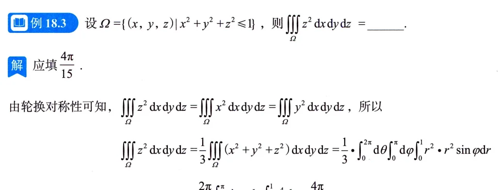
思路 设 \(\Omega=\{(x,y,z)\,|\,x^2+y^2+z^2\le 1\}\)，求 \(\iiint_{\Omega}z^2\,\mathrm{d}x\mathrm{d}y\mathrm{d}z\)。球体上 \(x,y,z\) 地位完全平等，轮换对称把 \(z^2\) 摊成 \(\frac{1}{3}(x^2+y^2+z^2)\)，后者在球坐标下就是 \(r^2\)。 要点
\[ \iiint_{\Omega}z^2\,\mathrm{d}v=\frac13\iiint_{\Omega}(x^2+y^2+z^2)\,\mathrm{d}v =\frac13\int_0^{2\pi}\mathrm{d}\theta\int_0^{\pi}\sin\varphi\,\mathrm{d}\varphi\int_0^1 r^4\,\mathrm{d}r =\frac{4\pi}{15}. \]
注 若不用轮换，直接算 \(\int\cos^2\varphi\sin\varphi\,\mathrm{d}\varphi\) 也行，但慢一倍——"后续所有积分，首先考虑用性质进行化简"（印 P552）。
例18.4 三重积分：锥体上的球面坐标（印P544）
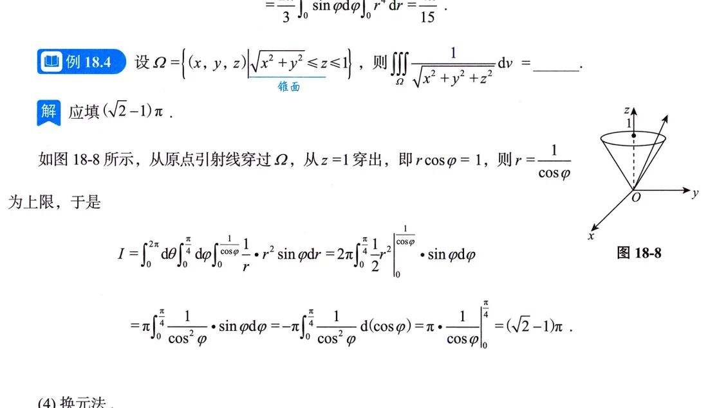
思路 设 \(\Omega=\{(x,y,z)\,|\,\sqrt{x^2+y^2}\le z\le 1\}\)（锥体，印 P544 图 18-8），求 \(\iiint_{\Omega}\dfrac{\mathrm{d}v}{\sqrt{x^2+y^2+z^2}}\)。被积函数含 \(x^2+y^2+z^2\)、区域是锥的部分——两个球坐标适用条件全中。 要点 从原点引射线穿过 \(\Omega\)：锥面 \(z=\sqrt{x^2+y^2}\) 给出 \(\varphi\in[0,\frac{\pi}{4}]\)（"喇叭花开到 \(\frac{\pi}{4}\)"）；从 \(z=1\) 平面穿出，\(r\cos\varphi=1\Rightarrow r=\dfrac{1}{\cos\varphi}\) 为上限。于是
\[ I=\int_0^{2\pi}\mathrm{d}\theta\int_0^{\pi/4}\mathrm{d}\varphi\int_0^{1/\cos\varphi}\frac{1}{r}\cdot r^2\sin\varphi\,\mathrm{d}r =2\pi\int_0^{\pi/4}\frac{\sin\varphi}{2\cos^2\varphi}\,\mathrm{d}\varphi=\pi\left[\frac{1}{\cos\varphi}\right]_0^{\pi/4}=(\sqrt2-1)\pi . \]
注 被积函数 \(\frac{1}{r}\) 与体积元 \(r^2\sin\varphi\) 相乘剩 \(r\sin\varphi\)，这正是"含 \(f(x^2+y^2+z^2)\) 用球坐标"的典型红利。
例18.5 三重积分：椭球体伸缩换元（印P546）
思路 设 \(\Omega=\{(x,y,z)\,|\,x^2+4y^2+z^2\le 1\}\)（椭球体），求 \(I=\iiint_{\Omega}(1-x^2-4y^2-z^2)\,\mathrm{d}x\mathrm{d}y\mathrm{d}z\)。椭球不能直接套球坐标，先"古怪的 \(\Omega\to\) 常规的单位球"：令 \(x=u,\ 2y=v,\ z=w\)。 要点 换元后 \(u^2+v^2+w^2\le 1\)，雅可比 \(\left|\frac{\partial(x,y,z)}{\partial(u,v,w)}\right|=\frac{1}{2}\)，故
\[ I=\iiint_{u^2+v^2+w^2\le 1}\!\!\left(1-u^2-v^2-w^2\right)\cdot\frac{1}{2}\,\mathrm{d}u\mathrm{d}v\mathrm{d}w =\frac12\int_0^{2\pi}\!\!\mathrm{d}\theta\int_0^{\pi}\!\!\sin\varphi\,\mathrm{d}\varphi\int_0^1(1-r^2)r^2\,\mathrm{d}r =\frac{4\pi}{15}. \]
注 这题的结论在习题 18.11 里被直接复用——"由例 18.5 知 \(I_{\max}=\frac{4\pi}{15}\)"，基础30讲的例题与习题是打通的。
例18.7 形心的计算：先一后二（印P548）
思路 设 \(\Omega=\{(x,y,z)\,|\,x^2+y^2\le z\le 1\}\)，求 \(\Omega\) 的形心竖坐标 \(\bar{z}\)。旋转抛物面体，投影为单位圆，先一后二最顺（原书旁批"投影"）。 要点
\[ \iiint_{\Omega}\mathrm{d}v=\iint_{x^2+y^2\le 1}(1-x^2-y^2)\,\mathrm{d}\sigma=\int_0^{2\pi}\mathrm{d}\theta\int_0^1(1-r^2)r\,\mathrm{d}r=\frac{\pi}{2}, \]
\[ \iiint_{\Omega}z\,\mathrm{d}v=\iint_{D}\Bigl[\int_{x^2+y^2}^{1}z\,\mathrm{d}z\Bigr]\mathrm{d}\sigma=\iint_D\frac{1-(x^2+y^2)^2}{2}\,\mathrm{d}\sigma=\pi\int_0^1(r-r^5)\,\mathrm{d}r=\frac{\pi}{3}, \]
所以 \(\bar{z}=\dfrac{\pi/3}{\pi/2}=\dfrac{2}{3}\)。 注 第二个积分的 \(\int z\,\mathrm{d}z=\frac{1-(r^2)^2}{2}\)——上限代 \(z=1\)、下限代 \(z=r^2\) 后平方，别写成 \((1-r^2)^2\)。
例18.10 第一型曲线积分：轮换 + 代曲线方程（印P552）
思路 设 \(\Gamma\) 是空间曲线 \(\begin{cases}x^2+y^2+z^2=1,\\ x+y+z=0,\end{cases}\) 求 \(\oint_{\Gamma}(x^2+y^2)\,\mathrm{d}s\)。这是过原点的平面切球心在原点的单位球面切出的大圆，\(x,y,z\) 地位相等（印 P552 分析原话）。 要点 轮换对称 \(\oint x^2\mathrm{d}s=\oint y^2\mathrm{d}s=\oint z^2\mathrm{d}s\)，故
\[ \oint_{\Gamma}(x^2+y^2)\,\mathrm{d}s=\frac{2}{3}\oint_{\Gamma}(x^2+y^2+z^2)\,\mathrm{d}s\overset{(*)}{=}\frac{2}{3}\oint_{\Gamma}1\,\mathrm{d}s=\frac{2}{3}\times 2\pi\times 1=\frac{4\pi}{3}. \]
注 步骤 \((*)\) 处把曲线方程 \(x^2+y^2+z^2=1\) 代入了被积函数——曲线积分的积分区域只有边界线，可以代；对照：三重积分 \(\Omega:x^2+y^2+z^2\le 1\) 是实心球，被积函数里的 \(x^2+y^2+z^2\) 不能代成 1（印 P553 注，正是本题旁的对比框）。
例18.11 第一型曲线积分：轮换 + 形心活用（印P554）
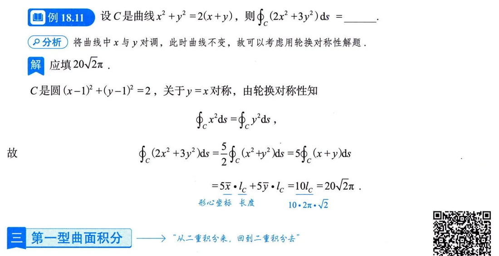
思路 设 \(C\) 是曲线 \(x^2+y^2=2(x+y)\)，即圆 \((x-1)^2+(y-1)^2=2\)，求 \(\oint_C(2x^2+3y^2)\,\mathrm{d}s\)。曲线关于 \(y=x\) 对称（\(x,y\) 对调后 \(C\) 不变），轮换 + 形心一步秒。 要点 \(\oint_Cx^2\,\mathrm{d}s=\oint_Cy^2\,\mathrm{d}s\)，所以
\[ \oint_C(2x^2+3y^2)\,\mathrm{d}s=\frac52\oint_C(x^2+y^2)\,\mathrm{d}s=5\oint_C(x+y)\,\mathrm{d}s=5(\bar{x}+\bar{y})\,l_C=10\,l_C=10\cdot 2\pi\sqrt2=20\sqrt2\,\pi . \]
注 圆的形心就是圆心 \((1,1)\)，周长 \(l_C=2\pi\sqrt2\)。凡是"闭曲线上的二次型 + \(\mathrm{d}s\)"，先想这一招。
例18.15 第二型曲线积分：绝对值 + 物理对称性（印P563）
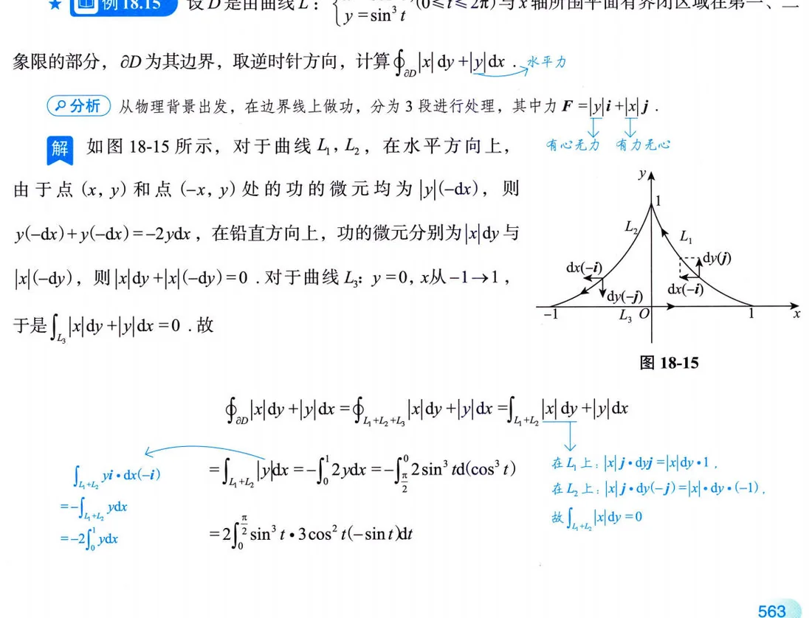
思路 设 \(D\) 是由曲线 \(L:x=\cos^3t,\ y=\sin^3t\ (0\le t\le\pi)\)（星形线上半支）与 \(x\) 轴所围的区域，\(\partial D\) 取逆时针方向，计算 \(I=\oint_{\partial D}|y|\,\mathrm{d}x+|x|\,\mathrm{d}y\)。从物理背景出发：\(\boldsymbol{F}=y\boldsymbol{i}+|x|\boldsymbol{j}\)（上半平面上 \(|y|=y\)），边界分三段处理——\(x\) 轴段、右半弧、左半弧。 要点 在 \(x\) 轴段 \(L_1\) 上 \(y=0,\ \mathrm{d}y=0\)，功为零。在左右两段弧上，点 \((x,y)\) 与 \((-x,y)\) 处：水平方向都在向左运动，微功均为 \(y(-\mathrm{d}x)\)，相加 \(-2y\,\mathrm{d}x\)；铅直方向一位向上一位向下，微功 \(x\,\mathrm{d}y\) 与 \(x(-\mathrm{d}y)\) 相抵为零。于是
\[ I=2\int_0^{\pi/2}\sin^3t\cdot 3\cos^2t\,(-\sin t)\,\mathrm{d}t=-6\int_0^{\pi/2}\sin^4t(1-\sin^2t)\,\mathrm{d}t=-6\cdot\frac{\pi}{32}=-\frac{3\pi}{16}. \]
注 本题不能套几何对称性、也不能直接上格林公式（\(|x|\) 在 \(x=0\) 处不可导），必须按第二型"物理概念 + 方向"的路线推——这正是印 P562 那段注记的实战版。原书总结：这种题"比较容易出解答题，且具有一定区分度"（印 P564）。
例18.18 格林公式：补线（印P566）
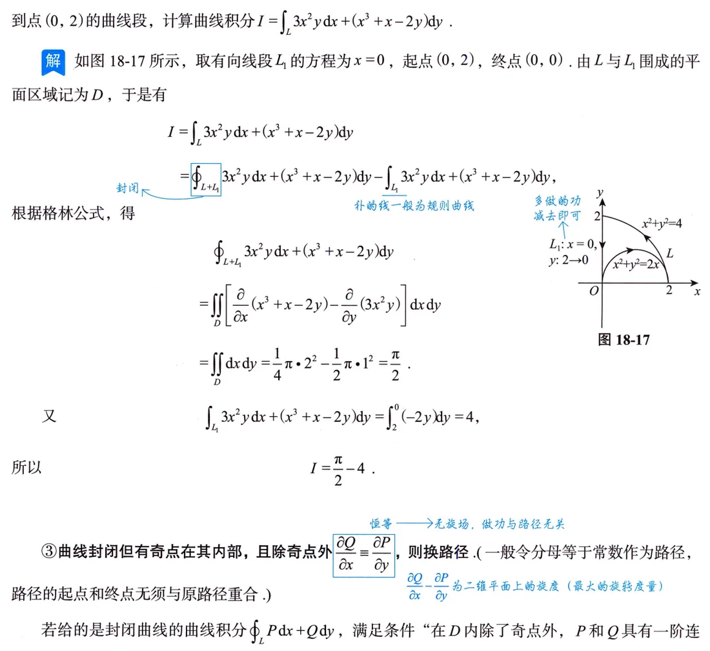
思路 已知 \(L\) 是第一象限中从点 \((0,0)\) 沿圆周 \(x^2+y^2=2x\) 到点 \((2,0)\)、再沿圆周 \(x^2+y^2=4\) 到点 \((0,2)\) 的曲线段，计算 \(I=\int_L3xy\,\mathrm{d}x+(x^3+x-2y)\,\mathrm{d}y\)。两段圆弧不封闭——补 \(y\) 轴上线段 \(L_1:x=0\)（从 \((0,2)\) 到 \((0,0)\)）围成 \(D\)，加线减线。 要点 \(\dfrac{\partial Q}{\partial x}-\dfrac{\partial P}{\partial y}=(3x^2+1)-3x^2=1\)，格林公式给
\[ \oint_{L+L_1}=\iint_D 1\,\mathrm{d}x\mathrm{d}y=\tfrac14\pi\cdot 2^2-\tfrac12\pi\cdot 1^2=\frac{\pi}{2}; \qquad \int_{L_1}=\int_2^0\bigl(0+0-2y\bigr)\,\mathrm{d}y=4 \] （\(L_1:x=0\)，此时 \(Q=x^3+x-2y=-2y\)，\(y\) 从 \(2\) 到 \(0\)）。
故 \(I=\dfrac{\pi}{2}-4\)。补线一般为规则曲线（此处 \(x=0\)），"多做的功减去即可"。 注 若把 \(\frac{\partial Q}{\partial x}-\frac{\partial P}{\partial y}=1\) 的二重积分写成 \(\frac{\pi}{2}\cdot 2^2-\frac{\pi}{2}\cdot 1^2\) 就错了——大圆是四分之一、小圆是二分之一，看图定系数。
例18.19 格林公式：挖洞（印P567）
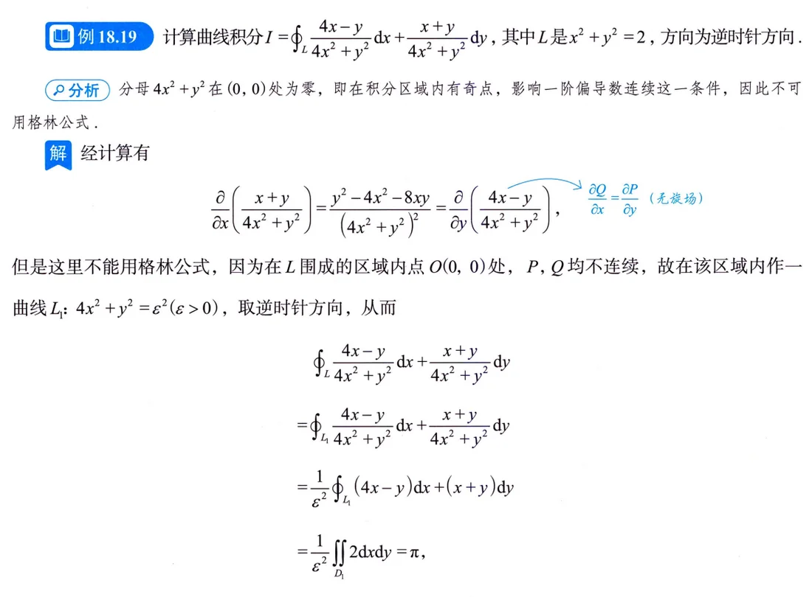
思路 计算 \(I=\oint_L\dfrac{(4x-y)\,\mathrm{d}x+(x+y)\,\mathrm{d}y}{4x^2+y^2}\)，其中 \(L\) 是 \(x^2+y^2=2\)，逆时针。分母 \(4x^2+y^2\) 在 \((0,0)\) 为零——奇点在 \(L\) 内部，格林公式不能直接用；但除原点外 \(\dfrac{\partial Q}{\partial x}=\dfrac{\partial P}{\partial y}\)（无旋场，直接算分子两个偏导相等即可验证），于是挖洞换路径。 要点 取 \(L_1:4x^2+y^2=\varepsilon^2\)（令分母等于常数），逆时针，与 \(L\) 同向。在 \(L_1\) 上分母为常数 \(\varepsilon^2\) 提出：
\[ I=\frac{1}{\varepsilon^2}\oint_{L_1}(4x-y)\,\mathrm{d}x+(x+y)\,\mathrm{d}y =\frac{1}{\varepsilon^2}\iint_{D_1}2\,\mathrm{d}x\mathrm{d}y =\frac{2}{\varepsilon^2}\cdot\pi\cdot\frac{\varepsilon}{2}\cdot\varepsilon=\pi , \]
其中 \(D_1\) 是椭圆 \(4x^2+y^2\le\varepsilon^2\) 围成的区域，面积 \(\pi\cdot\frac{\varepsilon}{2}\cdot\varepsilon\)。 注 挖洞曲线取"分母 = 常数"（这里是椭圆 \(4x^2+y^2=\varepsilon^2\) 而非圆），是这类题的固定操作；"路径的起点和终点无须与原路径重合"（印 P566）。
例18.21 路径无关：一题三解（印P570）
思路 设曲线积分 \(\int_Lxy^2\,\mathrm{d}x+y\varphi(x)\,\mathrm{d}y\) 与路径无关，\(\varphi(x)\) 有连续导数且 \(\varphi(0)=0\)，计算 \(\displaystyle\int_{(0,0)}^{(1,1)}xy^2\,\mathrm{d}x+y\varphi(x)\,\mathrm{d}y\)。先用路径无关条件解出 \(\varphi\)，再用三条路算积分。 要点 \(P=xy^2,\ Q=y\varphi(x)\)，\(\dfrac{\partial P}{\partial y}=2xy=\dfrac{\partial Q}{\partial x}=y\varphi'(x)\Rightarrow\varphi'(x)=2x\Rightarrow\varphi(x)=x^2+C\)；由 \(\varphi(0)=0\) 得 \(C=0\)。于是积分为 \(\int_{(0,0)}^{(1,1)}xy^2\,\mathrm{d}x+x^2y\,\mathrm{d}y\)：
- 方法一（特殊路径）：沿直线 \(y=x\)，\(\int_0^1x^3\mathrm{d}x+\int_0^1x^3\mathrm{d}x=\frac12\)；
- 方法二（折线）：\((0,0)\to(1,0)\to(1,1)\)，第一段 \(y=0\) 积分为 0，第二段 \(\mathrm{d}x=0\)，\(\int_0^1y\,\mathrm{d}y=\frac12\)；
- 方法三（凑微分）：\(xy^2\,\mathrm{d}x+x^2y\,\mathrm{d}y=xy(y\,\mathrm{d}x+x\,\mathrm{d}y)=xy\,\mathrm{d}(xy)=\mathrm{d}\Bigl(\frac{x^2y^2}{2}\Bigr)\)，原式 \(=\frac{x^2y^2}{2}\Big|_{(0,0)}^{(1,1)}=\frac12\)。
注 三法答案一致 \(\frac{1}{2}\)；凑微分最快，但折线法是通用武器（\(u(\text{终点})-u(\text{起点})\)）。
例18.25 转换投影法（印P576）
思路 设 \(\Sigma\) 为曲面 \(z=x^2+y^2\ (z\le 1)\) 的上侧，计算 \(I=\iint_{\Sigma}(x-1)^3\,\mathrm{d}y\mathrm{d}z+(y-1)^3\,\mathrm{d}z\mathrm{d}x+(z-1)\,\mathrm{d}x\mathrm{d}y\)。三项俱全、曲面是显函数——转换投影法一次投掉三项。 要点 \(z_x'=2x,\ z_y'=2y\)，投影 \(D:x^2+y^2\le 1\)，上侧取 "\(+\)"：
\[ I=\iint_{D}\bigl[(x-1)^3(-2x)+(y-1)^3(-2y)+(x^2+y^2-1)\bigr]\mathrm{d}x\mathrm{d}y . \]
展开后奇次项 \(-6x^3-2x-6y^3-2y\) 在圆域上积分为零，剩
\[ I=-\iint_{D}\bigl(2x^4+2y^4+5x^2+5y^2+1\bigr)\mathrm{d}x\mathrm{d}y =-\Bigl(\frac{\pi}{2}+\frac{5\pi}{2}+\pi\Bigr)=-4\pi , \]
其中 \(\iint_Dx^4\mathrm{d}\sigma=\iint_Dy^4\mathrm{d}\sigma=\dfrac{\pi}{8}\)（极坐标点火，故 \(2x^4+2y^4\) 贡献 \(\frac{\pi}{2}\)）、\(\iint_D(x^2+y^2)\,\mathrm{d}\sigma=\dfrac{\pi}{2}\)（故 \(5x^2+5y^2\) 贡献 \(\frac{5\pi}{2}\)）、\(\iint_D1\,\mathrm{d}\sigma=\pi\)。 注 若用直接投影法，三项要分别往三个坐标面投、拆前后左右四块，工作量数倍——转换投影法的价值就在这里。
例18.27 高斯公式：补面（印P578）
思路 计算 \(I=\displaystyle\iint_{\Sigma}\frac{x\,\mathrm{d}y\mathrm{d}z+(z+1)^2\,\mathrm{d}x\mathrm{d}y}{(x^2+y^2+z^2)^2}\)，其中 \(\Sigma\) 为下半球面 \(z=-\sqrt{1-x^2-y^2}\) 的上侧。第二型曲面积分可先把曲面方程代入被积函数（曲面上 \(x^2+y^2+z^2=1\)），再补面 \(z=0\ (x^2+y^2\le 1)\) 用高斯公式（"替代法 + 补面"，印 P578）。 要点 代入后 \(I=\iint_{\Sigma}x\,\mathrm{d}y\mathrm{d}z+(z+1)^2\,\mathrm{d}x\mathrm{d}y\)。\(\Sigma\) 的上侧朝向立体 \(\Omega\)（下半球体）的内部，故对 \(\Sigma+\Sigma_1\)（\(\Sigma_1:z=0\) 取上侧）用高斯公式要加负号：
\[ I=-\iiint_{\Omega}\Bigl(1+2(z+1)\Bigr)\mathrm{d}v+\iint_{\Sigma_1}1\,\mathrm{d}x\mathrm{d}y =-\iiint_{\Omega}(3+2z)\,\mathrm{d}v+\pi . \]
\(\iiint_{\Omega}(3+2z)\,\mathrm{d}v=3\cdot\frac{2\pi}{3}+2\cdot\Bigl(-\frac38\Bigr)\cdot\frac{2\pi}{3}=2\pi-\frac{\pi}{2}=\frac{3\pi}{2}\)（形心 \(\bar{z}=-\frac38\) 秒 \(\iiint z\,\mathrm{d}v\)），所以 \(I=-\frac{3\pi}{2}+\pi=-\dfrac{\pi}{2}\)。 注 两处易错：一是忘了"曲面方程可代入"而抱着分母硬算；二是 \(\Sigma\) 给的是上侧、对下半球体而言却是内侧，高斯公式前必须添负号。
例18.28 高斯公式：挖洞（印P579）
思路 设 \(\Sigma\) 是椭球面（法向量指向外侧），计算 \(I=\displaystyle\oiint_{\Sigma}\frac{x\,\mathrm{d}y\mathrm{d}z+y\,\mathrm{d}z\mathrm{d}x+z\,\mathrm{d}x\mathrm{d}y}{(x^2+y^2+z^2)^{3/2}}\)。原点在 \(\Sigma\) 内部且是奇点；直接算得除奇点外 \(\operatorname{div}\boldsymbol{F}=0\)——与格林挖洞法同理，"除奇点外通量全是零，包围奇点的任一曲面的积分都相等"。 要点 在 \(\Sigma\) 内部作小球面 \(\Sigma_1:x^2+y^2+z^2=r^2\ (r>0)\)，外侧，则
\[ I=\oiint_{\Sigma_1}\frac{x\,\mathrm{d}y\mathrm{d}z+y\,\mathrm{d}z\mathrm{d}x+z\,\mathrm{d}x\mathrm{d}y}{r^3} =\frac{1}{r^3}\iiint_{x^2+y^2+z^2\le r^2}3\,\mathrm{d}v =\frac{3}{r^3}\cdot\frac{4\pi r^3}{3}=4\pi . \]
（\((*)\) 处用高斯公式，\(\Omega_1\) 为小球围成的闭球域。） 注 答案与椭球的具体形状无关——这正是"挖洞"的威力：任何包围奇点的同向闭曲面积分相等。方法总结（印 P579 原书）：挖洞后利用高斯公式，在包围奇点的任一曲面上的积分都是相等的。
例18.29 高斯公式失效时的通量概念（印P579）
思路 计算 \(I=\displaystyle\oiint_{\Sigma}|xy|z\,\mathrm{d}x\mathrm{d}y+|x|yz\,\mathrm{d}y\mathrm{d}z\)，其中 \(\Sigma\) 为 \(z=x^2+y^2\) 与 \(z=1\) 所围区域 \(\Omega\) 的表面，方向向外。原书评价："这个题稍难，但并非难题，可以利用概念解题，一个卦限的通量 \(\times 4\) 即可。" 要点 拆 \(I=I_1+I_2\)（\(I_1\) 是 \(\mathrm{d}x\mathrm{d}y\) 项、\(I_2\) 是 \(\mathrm{d}y\mathrm{d}z\) 项）。\(I_2\) 不能对整体用高斯公式——\(|x|\) 对 \(x\) 的偏导在 \(x=0\) 处不存在；改用通量概念：点 \((x,y,z)\) 与 \((-x,y,z)\) 处的微通量 \(|x|yz\,\mathrm{d}y\mathrm{d}z\) 与 \(|x|yz\,(-\mathrm{d}y\mathrm{d}z)\) 一正一负相抵（前后两半曲面对 \(yOz\) 面的投影定向相反、\(|x|yz\) 关于 \(x\) 为偶），故 \(I_2=0\)。\(I_1\) 对一个卦限的封闭表面用高斯公式（卦限内部 \(|xy|=xy\) 无奇性，坐标面各片上 \(\mathrm{d}x\mathrm{d}y\) 投影成线积分为零）再 \(\times 4\)：
\[ I_1=4\iiint_{\Omega_{\text{卦限}}}|xy|\,\mathrm{d}v=4\iint_{\substack{x^2+y^2\le 1\\ x,y\ge 0}}xy\bigl[1-(x^2+y^2)\bigr]\mathrm{d}\sigma =4\int_0^{\pi/2}\!\!\cos\theta\sin\theta\,\mathrm{d}\theta\int_0^1r^2(1-r^2)r\,\mathrm{d}r=\frac{1}{6}. \]
所以 \(I=\dfrac{1}{6}\)。 注 本题与例 18.15 呼应：被积函数带绝对值/不可导因子时，整体高斯失效，"分卦限 + 对称点通量相抵"的物理论证替代公式；原书注明"本题也可利用高斯公式去解题，方法见解【注】"。（站注：题面被积函数的绝对值因子系由原书解法"偏导在 \(x=0\) 处不存在""一个卦限的通量 \(\times 4\)"及积分展开式反推确认，思路与答案 \(\frac16\) 均经复算。）
例18.30 空间曲线积分：一题三解（印P581）
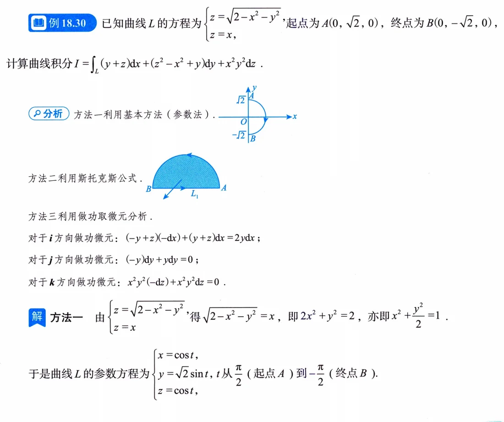
思路 已知曲线 \(L:\begin{cases}z=x,\\ x^2+y^2+z^2=2\end{cases}\)（上半球面与平面 \(z=x\) 的交线，取 \(x\ge 0\) 的一段），起点 \(A(0,\sqrt2,0)\)、终点 \(B(0,-\sqrt2,0)\)，计算 \(I=\int_L(y+z)\,\mathrm{d}x+(z^2-x^2+y)\,\mathrm{d}y+x^2y^2\,\mathrm{d}z\)。三法齐上：参数法是基本功，斯托克斯走"补直线 + 平面片"，微元分析走对称性。 要点 消 \(z\)：\(2x^2+y^2=2\)，参数方程 \(x=\cos t,\ y=\sqrt2\sin t,\ z=\cos t\)，\(t\) 从 \(\frac{\pi}{2}\)（起点 \(A\)）到 \(-\frac{\pi}{2}\)（终点 \(B\)）。方法一（参数法）：代入化简，奇次项对称消尽，得
\[ I=-\sqrt2\int_{\pi/2}^{-\pi/2}\sin^2t\,\mathrm{d}t=2\sqrt2\int_0^{\pi/2}\sin^2t\,\mathrm{d}t=2\sqrt2\cdot\frac{\pi}{4}=\frac{\sqrt2}{2}\pi . \]
方法二（斯托克斯）：补直线段 \(L_1\)（\(B\) 到 \(A\)，\(x=z=0\)），取平面 \(z=x\) 上由 \(L\) 与 \(L_1\) 围成的半圆面 \(\Sigma\) 的下侧，法向量方向余弦 \(\bigl(\frac{1}{\sqrt2},0,-\frac{1}{\sqrt2}\bigr)\)。旋度 \(\operatorname{rot}\boldsymbol{F}=(2x^2y-2z,\ 1-2xy^2,\ -2x-1)\)，点乘法向量后代入 \(z=x\)，\(-2z\) 与 \(2x\) 相消，得 \(\oint_{L+L_1}=\frac{1}{\sqrt2}\iint_{\Sigma}(2x^2y^2+1)\,\mathrm{d}S\)；\(\Sigma\) 关于 \(xOz\) 面对称砍掉 \(2x^2y^2\)，剩 \(\frac{1}{\sqrt2}\iint_{\Sigma}\mathrm{d}S=\frac{1}{\sqrt2}\cdot\pi=\frac{\sqrt2}{2}\pi\)（过球心的平面切球面得大圆，半径 \(\sqrt2\)，半圆面面积 \(\frac12\pi(\sqrt2)^2=\pi\)）；而 \(L_1\) 上 \(x=z=0\)，被积表达式恒为零，故 \(I=\frac{\sqrt2}{2}\pi\)。方法三（微元分析）：对称点 \((x,y,z)\) 与 \((x,-y,z)\)（参数 \(t\) 与 \(-t\)）处，\(k\) 方向微元 \(x^2y^2\,\mathrm{d}z\) 与 \(x^2y^2(-\mathrm{d}z)\) 相抵；\(j\) 方向在曲线上 \(z^2-x^2=0\)，微元 \(y\,\mathrm{d}y\) 与 \((-y)(-\mathrm{d}y)\) 合并后沿曲线积分为零；\(i\) 方向 \((y+z)\,\mathrm{d}x\) 与 \((z-y)(-\mathrm{d}x)\) 相加只剩 \(2y\,\mathrm{d}x\) 的一半份额——总之全曲线只剩
\[ I=\int_Ly\,\mathrm{d}x=\int_{\pi/2}^{-\pi/2}\sqrt2\sin t\cdot(-\sin t)\,\mathrm{d}t=\sqrt2\cdot\frac{\pi}{2}=\frac{\sqrt2}{2}\pi , \]
与参数法、斯托克斯殊途同归。 注 斯托克斯的曲面随便绷（泡泡棒比喻），选平面片最省事；三法互验是冲刺期最好的自测。
其余例题速览（印P540–582）
- 例18.6（印P548） 设 \(\Omega=\{(x,y,z)\,|\,4x^2+y^2+z^2\le 2z\}\)（即 \(4x^2+y^2+(z-1)^2\le 1\)，椭球体），求 \(\iiint_{\Omega}z\,\mathrm{d}v\)：形心 \((0,0,1)\)，\(V=\frac{4}{3}\pi\cdot\frac12\cdot1\cdot1=\frac{2\pi}{3}\)，故 \(\iiint z\,\mathrm{d}v=\bar{z}\cdot V=\frac{2\pi}{3}\)——形心活用。
- 例18.8（印P552） \(L:y=x^2\ (0\le x\le\sqrt2)\)，\(\int_Lx\,\mathrm{d}s=\int_0^{\sqrt2}x\sqrt{1+4x^2}\,\mathrm{d}x=\frac{(1+4x^2)^{3/2}}{12}\Big|_0^{\sqrt2}=\frac{13}{6}\)——一投二代三计算。
- 例18.9（印P552） \(L:x^2+y^2=-2y\)，\(I=\oint_L\sqrt{x^2+y^2}\,\mathrm{d}s\)：曲线与被积函数都含平方和，用极坐标 \(r=-2\sin\theta\ (\theta\in[-\pi,0])\)，\(\mathrm{d}s=\sqrt{r^2+r'^2}\,\mathrm{d}\theta=2\,\mathrm{d}\theta\)，\(I=\int_{-\pi}^{0}(-2\sin\theta)\cdot2\,\mathrm{d}\theta=8\)。
- 例18.12（印P557） 求柱面 \(x^2+y^2=R^2\) 被 \(x=0,y=0,z=0,z=1\) 截出的第一卦限部分的 \(\iint_{\Sigma}z\,\mathrm{d}S\)：柱面往 \(xOy\) 投影缩成一条线，必须向 \(xOz\) 面投（"投影点不可重合，故可向 \(xOz\) 面投"），\(\mathrm{d}S=\frac{R}{\sqrt{R^2-x^2}}\mathrm{d}x\mathrm{d}z\)，\(D=\{0\le x\le R,0\le z\le 1\}\)，\(I=R\bigl(\int_0^R\frac{\mathrm{d}x}{\sqrt{R^2-x^2}}\bigr)\bigl(\int_0^1z\,\mathrm{d}z\bigr)=\frac{\pi}{4}R\)。
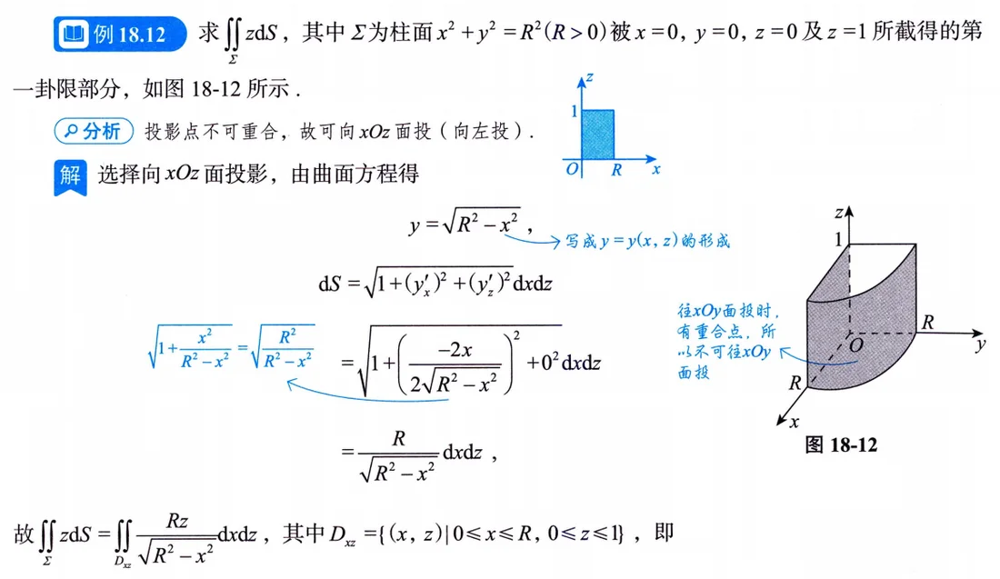
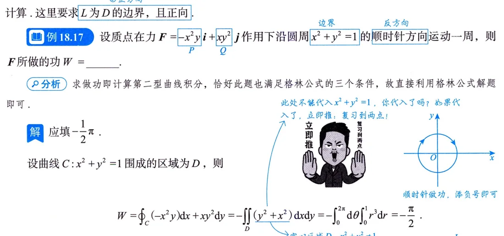
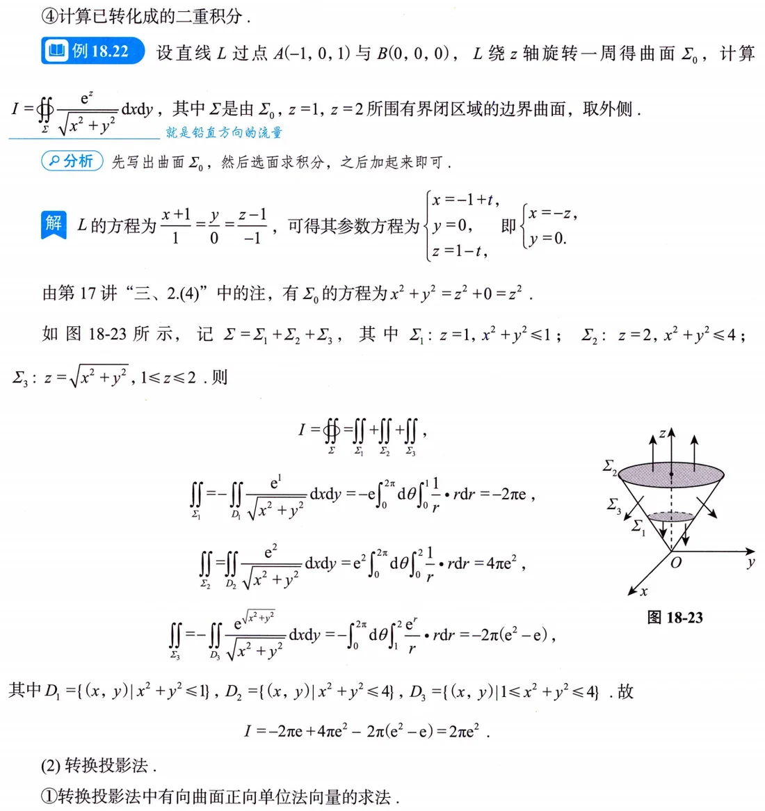
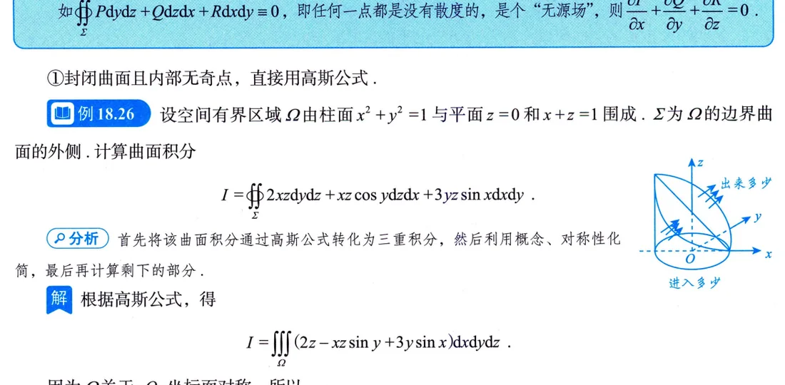
习题 18.1–18.11 速览（印P583–587）
- 习题18.1 \(L:\begin{cases}x^2+y^2+z^2=9\\ x+y+z=0\end{cases}\)，\(\oint_L(3x^2-y^2-z^2)\,\mathrm{d}s\)：轮换化成 \(\oint_Lx^2\mathrm{d}s=\frac13\oint_L(x^2+y^2+z^2)\mathrm{d}s=3\oint_L\mathrm{d}s=3\cdot 2\pi\cdot3=18\pi\)，选 (B)。
- 习题18.2 球面 \((x-1)^2+y^2+(z+1)^2=1\) 上 \(\oiint_{\Sigma}(2x+3y+z)\,\mathrm{d}S=(2\bar{x}+3\bar{y}+\bar{z})S=(2+0-1)\cdot4\pi=4\pi\)，选 (A)。
- 习题18.3 \(L\) 为柱面 \(x^2+y^2=1\) 与平面 \(z=x+y\) 的交线（从 \(z\) 轴正向看逆时针），\(\oint_Lxz\,\mathrm{d}x+x\,\mathrm{d}y+y^2\,\mathrm{d}z=\pi\)：参数法或斯托克斯（平面 \(z=x+y\) 片，法向量 \((-\frac{1}{\sqrt3},-\frac{1}{\sqrt3},\frac{1}{\sqrt3})\)，化成 \(\iint_{x^2+y^2\le1}(1-x-2y)\,\mathrm{d}\sigma=\pi\)）。
- 习题18.4 正向圆 \(x^2+y^2=a^2\) 上 \(\oint_L\frac{(\mathrm{e}^{x^2}-x^2y)\,\mathrm{d}x+(xy^2-\sin y^2)\,\mathrm{d}y}{x^2+y^2}\)：先代曲线方程（分母 \(=a^2\)），格林后 \(\frac{1}{a^2}\iint(x^2+y^2)\,\mathrm{d}\sigma=\frac{\pi}{2}a^2\)。
- 习题18.5 球面 \(x^2+y^2+z^2=1\) 上 \(\iint_{\Sigma}x(4x-z)\,\mathrm{d}S\)：\(xz\) 在 8 个卦限 4 正 4 贡为零；轮换 \(4\iint x^2\mathrm{d}S=\frac43\iint(x^2+y^2+z^2)\,\mathrm{d}S=\frac43\cdot4\pi=\frac{16\pi}{3}\)。
- 习题18.6 \(\Sigma:|x|+|y|+|z|=1\)（正八面体表面）：\(\iint_{\Sigma}x\,\mathrm{d}S=0\)（奇对称）且 \(x,y,z\) 轮换三等分；\(\Sigma\) 由 8 块边长 \(\sqrt2\) 的等边三角形组成，\(A_{\Sigma}=8\cdot\frac12(\sqrt2)^2\sin60^\circ=4\sqrt3\)——被积函数里的常数项即落在 \(A_{\Sigma}\) 上。
- 习题18.7 \(\Sigma:x^2+y^2+z^2=a^2\) 外侧，\(\oiint x^3\mathrm{d}y\mathrm{d}z+y^3\mathrm{d}z\mathrm{d}x+z^3\mathrm{d}x\mathrm{d}y=\iiint3(x^2+y^2+z^2)\,\mathrm{d}v=3\int_0^{2\pi}\mathrm{d}\theta\int_0^{\pi}\sin\varphi\mathrm{d}\varphi\int_0^ar^4\mathrm{d}r=\frac{12}{5}\pi a^5\)。
- 习题18.8 \(\Omega\) 由 \(z=4(x^2+y^2)\) 与 \(z=4\) 围成，\(\iiint_{\Omega}(x^2+y^2)\,\mathrm{d}v=\int_0^{2\pi}\mathrm{d}\theta\int_0^1r^2\cdot r\,\mathrm{d}r\int_{4r^2}^{4}\mathrm{d}z=2\pi\int_0^1(4r^3-4r^5)\mathrm{d}r=\frac{2\pi}{3}\)。
- 习题18.9 \(L\) 为 \(O(0,0)\) 沿 \(y=\sin x\) 到 \(A(\pi,0)\) 的有向弧段，\(\int_L[\mathrm{e}^x\cos y+2(x+y)]\,\mathrm{d}x+(\cdots)\,\mathrm{d}y\)：补 \(x\) 轴线段用格林，补线段上积分 \(\int_{\pi}^{0}(\mathrm{e}^x+2x)\,\mathrm{d}x=1-\mathrm{e}^{\pi}-\pi^2\)，答案由 \(\mathrm{e}^{\pi}\) 与 \(\pi^2\) 组合而成（站注：本题末行印刷小字未能逐字核对，思路与主干无误）。
- 习题18.10 \(\Sigma:z=x^2+y^2\ (0\le z\le 1)\) 法向量与 \(z\) 轴正向夹锐角（上侧），\(\iint_{\Sigma}(2x+z)\,\mathrm{d}y\mathrm{d}z+z\,\mathrm{d}x\mathrm{d}y=-\frac{\pi}{2}\)：补 \(z=1\) 下侧圆盘，整体（内侧）用高斯 \(-3V=-\frac{3\pi}{2}\)，减补面 \((-\pi)\) 得 \(-\frac{\pi}{2}\)。
- 习题18.11 \(\Sigma\) 为任意封闭曲面（外侧），\(I=\oiint_{\Sigma}P\,\mathrm{d}y\mathrm{d}z+Q\,\mathrm{d}z\mathrm{d}x+R\,\mathrm{d}x\mathrm{d}y\)，其中 \(\operatorname{div}\boldsymbol{F}=1-x^2-4y^2-z^2\)：(1) 由高斯公式 \(I=\iiint_{\Omega}(1-x^2-4y^2-z^2)\,\mathrm{d}v\)，要 \(I\) 最大须取使被积函数 \(\ge 0\) 的最大空间区域 \(\Omega=\{1-x^2-4y^2-z^2\ge0\}\)，即 \(\Sigma\) 为椭球面 \(x^2+4y^2+z^2=1\)；(2) 由例 18.5，\(I_{\max}=\frac{4\pi}{15}\)。
易错点与技巧
- 边界可代、内部不可代：曲线/曲面积分可以把积分曲线（曲面）的方程直接代入被积函数（例 18.10 的 \((*)\) 步、例 18.19 的分母、例 18.27 的分母），三重积分不行——\(\Omega:x^2+y^2+z^2\le1\) 是实心球（印 P552–553）。反过来，格林/高斯化到内部之后区域也是实心的，同样不能代边界方程（例 18.17 旁批"此处不能代入 \(x^2+y^2=1\)，你代入了吗？"，印 P565）。
- 第二型没有几何对称性：只有方向性 \(\int_{\widehat{AB}}=-\int_{\widehat{BA}}\)、\(\iint_{\Sigma^-}=-\iint_{\Sigma^+}\)；要"对称"必须从物理意义（做功、通量）+ 方向逐点推（\(\int_Lxy\,\mathrm{d}y=0\) 的推导，印 P562；例 18.15、18.29 是实战）。
- 格林/高斯动笔前三问：闭不闭？内部有没有奇点？方向是不是正向/外侧？顺时针或内侧，先添负号再写公式（印 P564、P577）。
- 第一型曲面积分投影点不能重合：柱面向 \(xOy\) 面投是一条线，得 0 是经典错解——换 \(xOz\) 面投（例 18.12，印 P557）；第二型则相反，\(\Sigma\perp\) 投影面时该分量积分直接为零（印 P573）。
- 第二型化定积分只认起终点：\(t=\alpha\) 对应起点、\(t=\beta\) 对应终点，\(\alpha,\beta\) 大小无关；第一型化定积分必须下限小上限大（\(\mathrm{d}s>0\)）——两件事刚好相反（印 P551、P562）。
- 两个 \(\mathrm{d}x\mathrm{d}y\) 写法相同、含义不同：第二型曲面积分里是带符号的投影分量，二重积分里是恒正的面积微元（印 P574）；±号口诀"上正下负、前正后负、右正左负"（印 P573）。
- 转换投影法别忘了代 \(z=z(x,y)\)：\(-Pz_x'-Qz_y'+R\) 里的 \(P,Q,R\) 都要先换成 \(x,y\) 的函数再积分（印 P575）；曲面侧向判断错了，全盘符号翻转（例 18.27 下半球面上侧=立体内侧）。
- 挖洞方向与"分母=常数"：小闭曲线/小闭曲面与原曲线/曲面同向，路径取"分母 \(=\varepsilon^2\)"（例 18.19 椭圆 \(4x^2+y^2=\varepsilon^2\)）、曲面取"分母 \(=\varepsilon^3\)"或小球面（例 18.28），印 P567、P579。
- 先看化成三重/二重后好不好算再选方法：例 18.22 封闭锥面若硬用高斯，\(\mathrm{e}^z/\sqrt{x^2+y^2}\) 的三重积分更难受，逐块直接投影反而三行算完（印 P574）。
- 旋转体优先先二后一：截面 \(D_z\) 常是圆，例 18.7 中 \(\iint_{D_z}\mathrm{d}\sigma=\pi z\) 型直接读出；被积函数只含 \(z\) 时更是"面积×函数"一步到位（印 P540）。
- 形心秒算：\(\iiint_{\Omega}x\,\mathrm{d}v=\bar{x}V\)、\(\int_Lx\,\mathrm{d}s=\bar{x}l\)、\(\iint_{\Sigma}x\,\mathrm{d}S=\bar{x}A\)——圆心、球心、正八面体中心的形心一眼可读（例 18.6、18.11、习题 18.2、18.6；印 P547）。
- 轮换对称的使用前提是"变量对调后区域（曲线/曲面）不变"，目的是相加后化简：球上 \(\iiint f(x)\,\mathrm{d}v=\iiint f(z)\,\mathrm{d}v\)、星形线大圆上 \(\oint x^2\mathrm{d}s=\oint z^2\mathrm{d}s\)，别在不对称的区域上硬用（印 P534、P551）。
- 先一后二里 \(\int z\,\mathrm{d}z\) 的上下限要代入后再平方：\(\int_{r^2}^{1}z\,\mathrm{d}z=\frac{1-r^4}{2}\)，不是 \(\frac{(1-r^2)^2}{2}\)（例 18.7 复算要点）。
- 斯托克斯的两形式别混：\(\mathrm{d}y\mathrm{d}z\)-行列式是第二型曲面形式，\(\cos\alpha\)-行列式配 \(\mathrm{d}S\) 是第一型形式；\(\Gamma\) 方向与 \(\Sigma\) 法向量成右手系，否则整体差一个负号（印 P581）。
- 球坐标定限按"转、开、穿"三步走，\(\theta\) 的范围由"门扫过区域"定、\(\varphi\) 由锥面半顶角定、\(r\) 由射线穿出面定——例 18.4 中 \(r\) 的上限是平面 \(z=1\) 给出的 \(\frac{1}{\cos\varphi}\) 而不是常数（印 P543）。
- 通量正负：流出为正、流入为负；对称曲面上"从 \(A\) 进、从 \(B\) 出"通量抵消为零——这是判断第二型曲面积分为零的最快心法（印 P572）。
考点与方法补充（站注）
本节为自学站补充，非原书内容；数学表述以原书为准。
- 考频定位（站注·真题大数据）：多元积分学属第三梯队（15 年出现 5–8 次），但"不复习直接丢 10 分+"——数一独有的大题板块。高频落点与原书重难点清单几乎重合：格林公式（直接用/补线/挖洞）、高斯公式（直接用/补面/挖洞）、斯托克斯公式，加三类对称性与转换投影法。复习策略上属于"低频高危"：不值得天天练，值得一次性练透，考前再滚动保温。
- 格林与高斯的"三分支平行结构"（站注）：两公式的使用分支一一对应——封闭无奇点直接用；不封闭补线/补面（加多少减多少）；封闭有奇点且除奇点外旋度/散度为零则挖洞换路径/换面。把这个平行表背下来，考场上先判断分支再动笔，方向（正向/外侧、同向）单独最后核对一遍，能消灭大部分失分。原书印 P565–567 与 P577–579 的分支叙述本身就是对照排版。
- 三类对称性的分层（站注）：①第一型（及三重积分）的普通对称性——几何背景，奇零偶倍；②轮换对称性——"对调后区域不变"，为相加化简而用；③第二型的"物理对称性"——无几何背景，须结合做功/通量与方向逐点分析（\(\mathrm{d}x\) 同向则加倍、\(\mathrm{d}y\) 反向则抵消）。这与第 14 讲二重积分的"对称性、奇偶性、轮换性三大神器"一脉相承，只是第二型必须降级为"物理论证"。建议把 L14 的对称性结论与本讲例 18.15、18.29 放在一起二刷。
- 转换投影法（站注）：数一卷面特色方法，本质是 \(\iint\boldsymbol{F}\cdot\mathrm{d}\boldsymbol{S}=\iint\boldsymbol{F}\cdot\boldsymbol{n}^{\circ}\,\mathrm{d}S\) 的"一次投影三项合并"。适用信号：曲面是显函数 \(z=z(x,y)\) 且三项俱全（如例 18.25）。若曲面必须拆块或侧向复杂，退回直接投影/高斯。三种方法（直接投影、转换投影、高斯）在脑中排一个优先级：先看封闭性与散度复杂度，再看显函数单值性。
- 与 L17 的衔接（站注）：空间解析几何是本讲的画图底座——例 18.13 用第 17 讲"四、2.(1)"的切平面方程求距离，例 18.22 用"三、2.(4) 注"的旋转曲面结论（\(L\) 绕 \(z\) 轴得 \(x^2+y^2=z^2\)），例 18.30 靠截痕法认出"平面切球面得大圆/椭圆"。若 L17 的平面束、投影曲线、旋转曲面不熟，本讲的定限会处处卡壳；反之本讲是 L17 最好的复习材料。
- 张宇方法论（站注）：张宇反复强调"尽快结束纯听课阶段，自己动手最重要"、计算能力是决定分数的第一因素。本讲尤其如此：三大公式人人会背，考场上拉开差距的是补线/补面后的定向、对称性的正确调用、点火公式与极坐标的熟练度——这些只能靠动手算例题获得。书系路线上，基础阶段《基础30讲》+《300题》配套，本讲学完应立即做 300 题对应题组；强化阶段在《强化36讲》"判定类型，做好计算"的主题下再上强度。
- 关于"三大计算"（站注）：考研圈常说的"三大计算"（极限、导数、积分的计算训练）是杨超的提法，不是张宇的口号，引用时别安错出处；张宇对应的主张是上面那条"计算能力是第一因素"。
- 真题使用（站注）：至少做近十年真题中数一的曲线曲面积分大题（几乎每年一道，格林/高斯/斯托克斯轮换坐庄）；自检标准：随机抽 5 道大题独立完成，正确率 \(\ge 90\%\) 再算过关。2010 年以前的题风格差异大，参考价值有限。
知识清单自测
自测题
1.（习题 18.1）设 \(L\) 为曲线 \(\begin{cases}x^2+y^2+z^2=9,\\ x+y+z=0,\end{cases}\) 则 \(\oint_L(3x^2-y^2-z^2)\,\mathrm{d}s=(\quad)\)。选项：(A) \(27\pi\) (B) \(18\pi\) (C) \(12\pi\) (D) \(6\pi\)
查看答案
解 选 (B)。\(L\) 是球面与过球心的平面的交线（大圆），\(x,y,z\) 地位轮换对称，故 \(\oint_L x^2\mathrm{d}s=\oint_L y^2\mathrm{d}s=\oint_L z^2\mathrm{d}s\)，且曲线方程 \(x^2+y^2+z^2=9\) 可代入被积函数，于是
\[ \oint_L(3x^2-y^2-z^2)\,\mathrm{d}s=\oint_L x^2\,\mathrm{d}s=\oint_L\frac{x^2+y^2+z^2}{3}\,\mathrm{d}s=3\oint_L\mathrm{d}s=3\cdot(2\pi\cdot 3)=18\pi . \]
2.（习题 18.2）设 \(\Sigma\) 为球面 \((x-1)^2+y^2+(z+1)^2=1\)，则 \(\displaystyle\oiint_{\Sigma}(2x+3y+z)\,\mathrm{d}S=(\quad)\)。选项：(A) \(4\pi\) (B) \(2\pi\) (C) \(\pi\) (D) \(0\)
查看答案
解 选 (A)。第一型曲面积分用形心：\(\oiint_{\Sigma}x\,\mathrm{d}S=\bar{x}\,S\) 等，球面形心即球心 \((1,0,-1)\)，\(S=4\pi\)，故
\[ \oiint_{\Sigma}(2x+3y+z)\,\mathrm{d}S=(2\bar{x}+3\bar{y}+\bar{z})\,S=(2+0-1)\cdot 4\pi=4\pi . \]
3.（习题 18.4）设 \(L\) 为取正向的圆 \(x^2+y^2=a^2\ (a>0)\)，求 \(\displaystyle\oint_L\frac{(\mathrm{e}^{x^2}-x^2y)\,\mathrm{d}x+(xy^2-\sin y^2)\,\mathrm{d}y}{x^2+y^2}\)。
查看答案
解 先把曲线方程 \(x^2+y^2=a^2\) 代入分母（这是曲线积分，可以代）：
\[ \text{原式}=\frac{1}{a^2}\oint_L(\mathrm{e}^{x^2}-x^2y)\,\mathrm{d}x+(xy^2-\sin y^2)\,\mathrm{d}y , \]
闭曲线取正向、\(P,Q\) 偏导连续，用格林公式：\(\dfrac{\partial Q}{\partial x}=y^2,\ \dfrac{\partial P}{\partial y}=-x^2\)，差为 \(x^2+y^2\)，故
\[ \text{原式}=\frac{1}{a^2}\iint_{x^2+y^2\le a^2}(x^2+y^2)\,\mathrm{d}x\mathrm{d}y =\frac{1}{a^2}\int_0^{2\pi}\mathrm{d}\theta\int_0^a r^2\cdot r\,\mathrm{d}r =\frac{1}{a^2}\cdot 2\pi\cdot\frac{a^4}{4}=\frac{1}{2}\pi a^2 . \]
注 代入只发生在"曲线积分"阶段；格林化成二重积分后区域是实心的，\(\frac{\partial Q}{\partial x}-\frac{\partial P}{\partial y}=x^2+y^2\) 里的 \(x^2+y^2\) 不能再代成 \(a^2\)。
4.（习题 18.5）设 \(\Sigma\) 为球面 \(x^2+y^2+z^2=1\)，则第一型曲面积分 \(\displaystyle\iint_{\Sigma}x(4x-z)\,\mathrm{d}S=\) ______。
查看答案
解 应填 \(\dfrac{16\pi}{3}\)。分两步：函数 \(xz\) 在球面 8 个卦限内 4 正 4 负且对应点绝对值相同，故 \(\iint_{\Sigma}xz\,\mathrm{d}S=0\)；再由轮换对称性 \(\iint_{\Sigma}x^2\,\mathrm{d}S=\iint_{\Sigma}y^2\,\mathrm{d}S=\iint_{\Sigma}z^2\,\mathrm{d}S\)，于是
\[ \iint_{\Sigma}x(4x-z)\,\mathrm{d}S=4\iint_{\Sigma}x^2\,\mathrm{d}S =\frac{4}{3}\iint_{\Sigma}(x^2+y^2+z^2)\,\mathrm{d}S \overset{(*)}{=}\frac{4}{3}\cdot 4\pi=\frac{16\pi}{3}, \]
其中 \((*)\) 处把球面方程 \(x^2+y^2+z^2=1\) 代入了被积函数（曲面积分可以代曲面方程）。
5.（习题 18.8）设 \(\Omega\) 由椭圆抛物面 \(z=4(x^2+y^2)\) 和平面 \(z=4\) 围成，求 \(\displaystyle\iiint_{\Omega}(x^2+y^2)\,\mathrm{d}v\)。
查看答案
解 \(\Omega\) 在 \(xOy\) 面上的投影是单位圆 \(x^2+y^2\le1\)，被积函数含 \(x^2+y^2\)，柱面坐标 \(4r^2\le z\le 4\)：
\[ \iiint_{\Omega}(x^2+y^2)\,\mathrm{d}v=\int_0^{2\pi}\mathrm{d}\theta\int_0^1 r^2\cdot r\,\mathrm{d}r\int_{4r^2}^{4}\mathrm{d}z =2\pi\int_0^1(4r^3-4r^5)\,\mathrm{d}r=2\pi\left(1-\frac{2}{3}\right)=\frac{2\pi}{3}. \]
6.（习题 18.10）计算 \(\displaystyle\iint_{\Sigma}(2x+z)\,\mathrm{d}y\mathrm{d}z+z\,\mathrm{d}x\mathrm{d}y\)，其中 \(\Sigma\) 为有向曲面 \(z=x^2+y^2\ (0\le z\le 1)\)，其法向量与 \(z\) 轴正向夹角为锐角。
查看答案
解 法向量与 \(z\) 轴夹锐角即抛物面取上侧（对区域 \(\Omega:\,x^2+y^2\le z\le1\) 而言是内侧）。补平面 \(\Sigma_1:\ z=1\ (x^2+y^2\le1)\) 取下侧，则 \(\iint_{\Sigma_1}(2x+z)\mathrm{d}y\mathrm{d}z+z\,\mathrm{d}x\mathrm{d}y=-\iint_D1\,\mathrm{d}x\mathrm{d}y=-\pi\)。对 \(\Sigma+\Sigma_1\)（整体为 \(\Omega\) 的内侧）用高斯公式加负号：
\[ \oiint_{\Sigma+\Sigma_1}=-\iiint_{\Omega}(2+1)\,\mathrm{d}v =-3\int_0^{2\pi}\mathrm{d}\theta\int_0^1 r\,\mathrm{d}r\int_{r^2}^{1}\mathrm{d}z =-6\pi\int_0^1(r-r^3)\,\mathrm{d}r=-6\pi\cdot\frac14=-\frac{3\pi}{2}. \]
所以 \(\iint_{\Sigma}=\oiint_{\Sigma+\Sigma_1}-\iint_{\Sigma_1}=-\dfrac{3\pi}{2}-(-\pi)=-\dfrac{\pi}{2}\)。